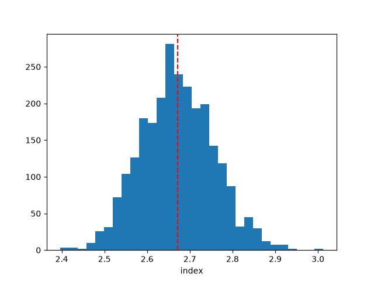
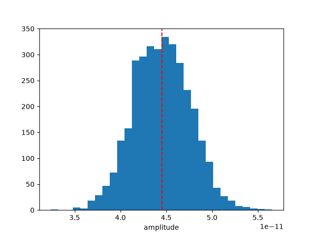
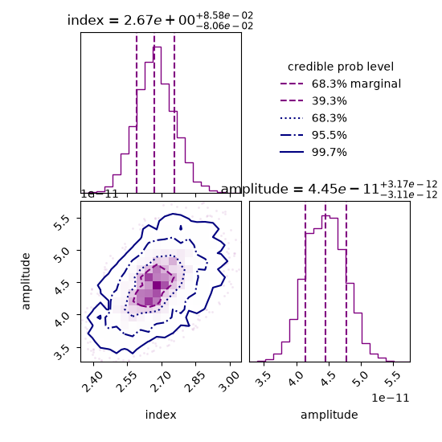
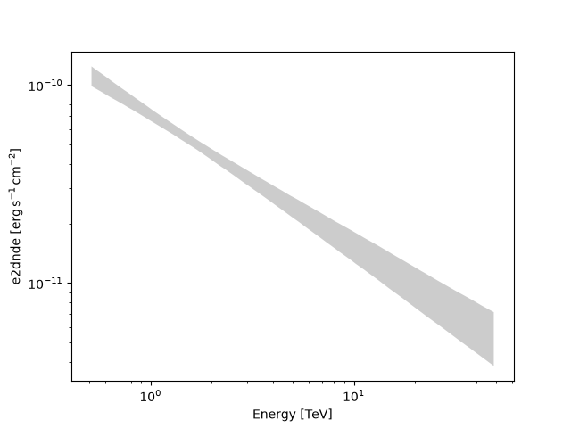
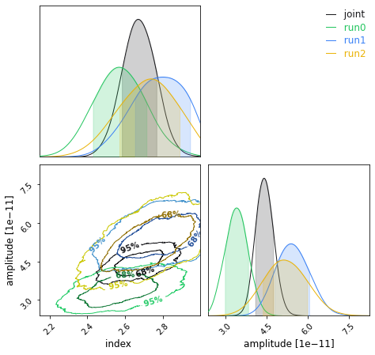
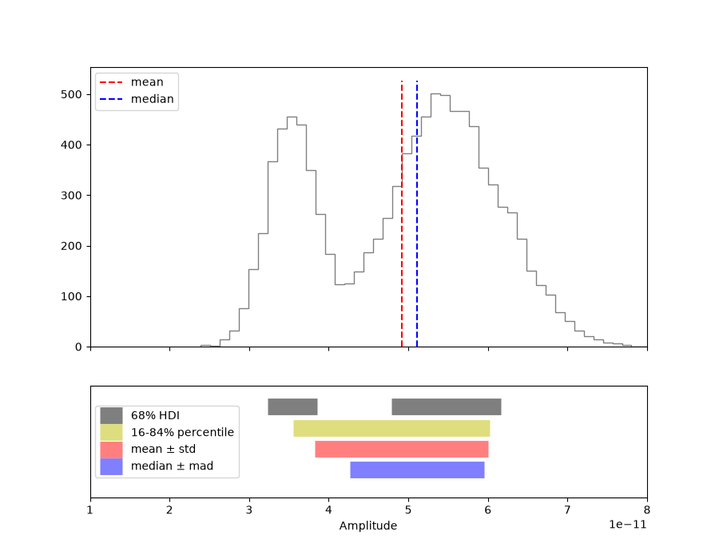

Note
Go to the end to download the full example code or to run this example in your browser via Binder.
Bayesian analysis with nested sampling#
A demonstration of a Bayesian analysis using the nested sampling technique.
Context#
1. Bayesian analysis#
Bayesian inference uses prior knowledge, in the form of a prior distribution, in order to estimate posterior probabilities which we traditionally visualise in the form of corner plots. These distributions contain more information than a maximum likelihood fit as they reveal not only the “best model” but provide a more accurate representation of errors and correlation between parameters. In particular, non-Gaussian degeneracies are complex to estimate with a maximum likelihood approach.
2. Limitations of the Markov Chain Monte Carlo approach#
A well-known approach to estimate this posterior distribution is the Markov Chain Monte Carlo (MCMC). This uses an ensemble of walkers to produce a chain of samples that after a convergence period will reach a stationary state. Once convergence is reached, the successive elements of the chain are samples of the target posterior distribution. However, the weakness of the MCMC approach lies in the “Once convergence” part. If the walkers are started far from the best likelihood region, the convergence time can be long or never reached if the walkers fall in a local minima. The choice of the initialisation point can become critical for complex models with a high number of dimensions and the ability of these walkers to escape a local minimum or to accurately describe a complex likelihood space is not guaranteed.
3. Nested sampling approach#
To overcome these issues, the nested sampling (NS) algorithm has gained traction in physics and astronomy. It is a Monte Carlo algorithm for computing an integral of the likelihood function over the prior model parameter space introduced in Skilling, 2004. The method performs this integral by evolving a collection of points through the parameter space (see recent reviews from Ashton et al., 2022, and Buchner, 2023). Without going into too many details, one important specificity of the NS method is that it starts from the entire parameter space and evolves a collection of live points to map all minima (including multiple modes if any), whereas Markov Chain Monte Carlo methods require an initialisation point and the walkers will explore the local likelihood. The ability of these walkers to escape a local minimum or to accurately describe a complex likelihood space is not guaranteed. This is a fundamental difference with MCMC or Minuit which will only ever probe the vicinity along their minimisation paths and do not have an overview of the global likelihood landscape. The analysis using the NS framework is more CPU time consuming than a standard classical fit, but it provides the full posterior distribution for all parameters, which is out of reach with traditional fitting techniques (N*(N-1)/2 contour plots to generate). In addition, it is more robust to the choice of initialisation, requires less human intervention and is therefore readily integrated in pipeline analysis. In Gammapy, we provide several NS backends: UltraNest and Nautilus. UltraNest is a package that implements the NS algorithm and is used in many astrophysical applications. Nautilus is a more recent implementation of the NS algorithm that exploits neural networks to learn a likelihood function emulator to propose new live points. It is designed to be faster and more efficient than UltraNest, especially for high-dimensional problems. For a nice visualisation of the NS method see here: sampling visualisation. And for a tutorial of UltraNest applied to X-ray fitting with concrete examples and questions see: BXA Tutorial.
See the UltraNest docs here). Note: please cite UltraNest if used for a paper If you are using the “UltraNest” library for a paper, please follow its citation scheme: Cite UltraNest.
See the Nautilus docs here). Note: please cite Nautilus if used for a paper If you are using the “Nautilus” library for a paper, please follow its citation scheme: Cite Nautilus.
Proposed approach#
In this example, we will perform a Bayesian analysis with multiple 1D spectra of the Crab nebula data and investigate their posterior distributions.
Setup#
As usual, we’ll start with some setup …
import matplotlib.pyplot as plt
import numpy as np
import astropy.units as u
from gammapy.datasets import Datasets
from gammapy.datasets import SpectrumDatasetOnOff
from gammapy.modeling.models import (
SkyModel,
UniformPrior,
LogUniformPrior,
)
from gammapy.modeling.sampler import Sampler
Loading the spectral datasets#
Here we will load a few Crab 1D spectral data for which we will do a fit.
Model definition#
Now we want to define the spectral model that will be fitted to the data. The Crab spectra will be fitted here with a simple powerlaw for simplicity.
model = SkyModel.create(spectral_model="pl", name="crab")
Warning
Priors definition: Unlike a traditional fit where priors on the parameters are optional, here it is inherent to the Bayesian approach and are therefore mandatory.
In this case we will set (min,max) prior that will define the
boundaries in which the sampling will be performed.
Note that it is usually recommended to use a LogUniformPrior for
the parameters that have a large amplitude range like the
amplitude parameter.
A UniformPrior means that the samples will be drawn with uniform
probability between the (min,max) values in the linear or log space
in the case of a LogUniformPrior.
model.spectral_model.amplitude.prior = LogUniformPrior(min=1e-12, max=1e-10)
model.spectral_model.index.prior = UniformPrior(min=1, max=5)
datasets.models = [model]
print(datasets.models)
DatasetModels
Component 0: SkyModel
Name : crab
Datasets names : None
Spectral model type : PowerLawSpectralModel
Spatial model type :
Temporal model type :
Parameters:
index : 2.000 +/- 0.00
amplitude : 1.00e-12 +/- 0.0e+00 1 / (TeV s cm2)
reference (frozen): 1.000 TeV
Defining the sampler and options#
As for the Fit object, the Sampler object can receive
different backends.
The Sampler comes with “reasonable” default parameters, but you can
change them via the options dictionary, using the backend’s own option names.
Gammapy passes each option to the backend sampler constructor or to its run method.
Here is a short description of the most relevant UltraNest options that you
could change:
min_num_live_points: minimum number of live points throughout the run. More points allow to discover multiple peaks if existing, but is slower. To test the Prior boundaries and for debugging, a lower number (~100) can be used before a production run with more points (~400 or more).frac_remain: the cut-off condition for the integration, set by the maximum allowed fraction of posterior mass left in the live points vs the dead points. High values (e.g., 0.5) are faster and can be used if the posterior distribution is a relatively simple shape. A low value (1e-1, 1e-2) is optimal for finding peaks, but slower.log_dir: directory where the output files will be stored. If set to None, no files will be written. If set to a string, a directory will be created containing the ongoing status of the run and final results. For time consuming analysis, it is highly recommended to use that option to monitor the run and restart it in case of a crash (withresume=True).
More information about the UltraNest options can be found in the UltraNest docs.
More information about the Nautilus options can be found in the Nautilus docs.
A few useful options for Nautilus are:
n_live: number of live points. Equivalent ofmin_num_live_pointsin UltraNest. Due to a different methodology the recommended number of live points should be higher than in UltraNest (1000-3000) while still being faster in high-dimensional problems.f_live: fraction of the evidence from live points to use for convergence. Equivalent offrac_remainin UltraNest.pool: Pool used for parallelization of likelihood calls and sampler calculations.filepath: file path with .hdf5 extension (not directory path) where the output files will be stored.
Backend comparison: For a comparison between the two backends methods, see here. For a gamma-ray analysis, current testing shows that UltraNest can be faster (or equivalent) than Nautilus for low-dimensional problems (1-5 parameters) and Nautilus is faster for high-dimensional problems (>10 parameters) but this of course case specific. If your analysis is dominated by likelihood evaluation time, the parallelisation of the likelihood evaluation in Nautilus (using multiprocessing, just setting pool=nCPUs in the sampler options) has a simpler setup than UltraNest (MPI) and can be more efficient on laptops. Notably, multiprocessing with Nautilus can work in a Jupyter notebook while MPI with UltraNest is not supported in a notebook.
Important note: unlike the MCMC method, you don’t need to define the number of steps for which the sampler will run. The algorithm will automatically stop once a convergence criteria has been reached.
Next we can run the sampler on a given dataset. No options are accepted in the run method.
[ultranest] Sampling 400 live points from prior ...
Mono-modal Volume: ~exp(-4.68) * Expected Volume: exp(0.00) Quality: ok
index : +1.0|************************************************| +5.0
amplitude: +1.0e-12|**************************************** *******| +1.0e-10
Z=-inf(0.00%) | Like=-3462.20..-59.22 [-3462.1973..-323.1259] | it/evals=0/401 eff=0.0000% N=400
Z=-552.0(0.00%) | Like=-546.21..-59.22 [-3462.1973..-323.1259] | it/evals=26/428 eff=92.8571% N=400
Z=-537.0(0.00%) | Like=-531.08..-59.22 [-3462.1973..-323.1259] | it/evals=40/442 eff=95.2381% N=400
Z=-519.3(0.00%) | Like=-510.93..-59.22 [-3462.1973..-323.1259] | it/evals=65/468 eff=95.5882% N=400
Z=-496.3(0.00%) | Like=-490.21..-59.22 [-3462.1973..-323.1259] | it/evals=80/483 eff=96.3855% N=400
Mono-modal Volume: ~exp(-4.68) Expected Volume: exp(-0.23) Quality: ok
index : +1.0|************************************************| +5.0
amplitude: +1.0e-12|************************************** *********| +1.0e-10
Z=-481.0(0.00%) | Like=-475.32..-59.22 [-3462.1973..-323.1259] | it/evals=101/507 eff=94.3925% N=400
Z=-456.9(0.00%) | Like=-450.85..-59.22 [-3462.1973..-323.1259] | it/evals=120/531 eff=91.6031% N=400
Z=-437.4(0.00%) | Like=-430.25..-59.22 [-3462.1973..-323.1259] | it/evals=144/557 eff=91.7197% N=400
Z=-423.9(0.00%) | Like=-418.13..-59.22 [-3462.1973..-323.1259] | it/evals=160/576 eff=90.9091% N=400
Mono-modal Volume: ~exp(-4.70) * Expected Volume: exp(-0.45) Quality: ok
index : +1.0|************************************************| +5.0
amplitude: +1.0e-12|************************************** *********| +1.0e-10
Z=-409.6(0.00%) | Like=-403.10..-59.22 [-3462.1973..-323.1259] | it/evals=180/597 eff=91.3706% N=400
Z=-397.8(0.00%) | Like=-390.64..-59.20 [-3462.1973..-323.1259] | it/evals=200/621 eff=90.4977% N=400
Z=-382.6(0.00%) | Like=-376.05..-59.20 [-3462.1973..-323.1259] | it/evals=221/647 eff=89.4737% N=400
Z=-363.3(0.00%) | Like=-356.94..-59.20 [-3462.1973..-323.1259] | it/evals=240/668 eff=89.5522% N=400
Z=-339.4(0.00%) | Like=-332.99..-59.20 [-3462.1973..-323.1259] | it/evals=261/695 eff=88.4746% N=400
Mono-modal Volume: ~exp(-4.80) * Expected Volume: exp(-0.67) Quality: ok
index : +1.0| **********************************************| +5.0
amplitude: +1.0e-12| ************************************* *********| +1.0e-10
Z=-333.8(0.00%) | Like=-326.61..-59.20 [-3462.1973..-323.1259] | it/evals=270/709 eff=87.3786% N=400
Z=-328.8(0.00%) | Like=-323.28..-59.20 [-3462.1973..-323.1259] | it/evals=280/725 eff=86.1538% N=400
Z=-314.2(0.00%) | Like=-308.66..-58.95 [-322.9670..-172.4855] | it/evals=301/751 eff=85.7550% N=400
Z=-302.8(0.00%) | Like=-295.89..-58.95 [-322.9670..-172.4855] | it/evals=320/772 eff=86.0215% N=400
Z=-289.7(0.00%) | Like=-283.67..-58.95 [-322.9670..-172.4855] | it/evals=339/798 eff=85.1759% N=400
Mono-modal Volume: ~exp(-4.80) Expected Volume: exp(-0.90) Quality: ok
index : +1.0| ********************************************| +5.0
amplitude: +1.0e-12| ************************************ *********| +1.0e-10
Z=-276.9(0.00%) | Like=-270.05..-58.95 [-322.9670..-172.4855] | it/evals=360/822 eff=85.3081% N=400
Z=-262.8(0.00%) | Like=-255.54..-58.95 [-322.9670..-172.4855] | it/evals=379/849 eff=84.4098% N=400
Z=-246.0(0.00%) | Like=-239.85..-58.95 [-322.9670..-172.4855] | it/evals=400/874 eff=84.3882% N=400
Z=-235.1(0.00%) | Like=-228.30..-58.95 [-322.9670..-172.4855] | it/evals=423/899 eff=84.7695% N=400
Z=-225.5(0.00%) | Like=-219.90..-58.95 [-322.9670..-172.4855] | it/evals=440/921 eff=84.4530% N=400
Mono-modal Volume: ~exp(-5.22) * Expected Volume: exp(-1.12) Quality: ok
index : +1.0| ******************************************| +5.0
amplitude: +1.0e-12| ********************************************| +1.0e-10
Z=-222.3(0.00%) | Like=-216.38..-58.95 [-322.9670..-172.4855] | it/evals=450/943 eff=82.8729% N=400
Z=-214.5(0.00%) | Like=-207.53..-58.95 [-322.9670..-172.4855] | it/evals=473/969 eff=83.1283% N=400
Z=-210.4(0.00%) | Like=-203.84..-58.95 [-322.9670..-172.4855] | it/evals=480/977 eff=83.1889% N=400
Z=-204.2(0.00%) | Like=-197.35..-58.95 [-322.9670..-172.4855] | it/evals=494/1003 eff=81.9237% N=400
Z=-198.3(0.00%) | Like=-192.49..-58.95 [-322.9670..-172.4855] | it/evals=512/1028 eff=81.5287% N=400
Z=-195.4(0.00%) | Like=-189.12..-58.95 [-322.9670..-172.4855] | it/evals=520/1037 eff=81.6327% N=400
Mono-modal Volume: ~exp(-5.62) * Expected Volume: exp(-1.35) Quality: ok
index : +1.0| **************************************** | +5.0
amplitude: +1.0e-12| *******************************************| +1.0e-10
Z=-188.8(0.00%) | Like=-182.69..-58.95 [-322.9670..-172.4855] | it/evals=540/1061 eff=81.6944% N=400
Z=-183.5(0.00%) | Like=-177.79..-58.95 [-322.9670..-172.4855] | it/evals=556/1088 eff=80.8140% N=400
Z=-182.8(0.00%) | Like=-176.61..-58.95 [-322.9670..-172.4855] | it/evals=560/1092 eff=80.9249% N=400
Z=-177.1(0.00%) | Like=-170.59..-58.95 [-172.4365..-122.2352] | it/evals=581/1119 eff=80.8067% N=400
Z=-173.0(0.00%) | Like=-167.09..-58.95 [-172.4365..-122.2352] | it/evals=597/1146 eff=80.0268% N=400
Z=-172.5(0.00%) | Like=-166.40..-58.95 [-172.4365..-122.2352] | it/evals=600/1150 eff=80.0000% N=400
Z=-168.9(0.00%) | Like=-162.84..-58.95 [-172.4365..-122.2352] | it/evals=618/1177 eff=79.5367% N=400
Mono-modal Volume: ~exp(-5.70) * Expected Volume: exp(-1.57) Quality: ok
index : +1.0| ********************************** | +5.0
amplitude: +1.0e-12| ***************************************** | +1.0e-10
Z=-166.6(0.00%) | Like=-160.77..-58.95 [-172.4365..-122.2352] | it/evals=630/1192 eff=79.5455% N=400
Z=-164.2(0.00%) | Like=-157.99..-58.95 [-172.4365..-122.2352] | it/evals=640/1204 eff=79.6020% N=400
Z=-159.2(0.00%) | Like=-153.29..-58.95 [-172.4365..-122.2352] | it/evals=657/1231 eff=79.0614% N=400
Z=-156.4(0.00%) | Like=-150.88..-58.95 [-172.4365..-122.2352] | it/evals=675/1257 eff=78.7631% N=400
Z=-155.8(0.00%) | Like=-150.28..-58.95 [-172.4365..-122.2352] | it/evals=680/1262 eff=78.8863% N=400
Z=-152.6(0.00%) | Like=-146.32..-58.94 [-172.4365..-122.2352] | it/evals=700/1289 eff=78.7402% N=400
Z=-149.6(0.00%) | Like=-143.51..-58.94 [-172.4365..-122.2352] | it/evals=717/1315 eff=78.3607% N=400
Mono-modal Volume: ~exp(-6.03) * Expected Volume: exp(-1.80) Quality: ok
index : +1.0| ****************************** | +5.0
amplitude: +1.0e-12| ****************************** ****** * | +1.0e-10
Z=-149.1(0.00%) | Like=-143.04..-58.94 [-172.4365..-122.2352] | it/evals=720/1319 eff=78.3460% N=400
Z=-144.9(0.00%) | Like=-138.64..-58.94 [-172.4365..-122.2352] | it/evals=740/1346 eff=78.2241% N=400
Z=-140.9(0.00%) | Like=-134.71..-58.94 [-172.4365..-122.2352] | it/evals=760/1373 eff=78.1089% N=400
Z=-138.2(0.00%) | Like=-132.08..-58.94 [-172.4365..-122.2352] | it/evals=776/1400 eff=77.6000% N=400
Z=-136.1(0.00%) | Like=-130.02..-58.94 [-172.4365..-122.2352] | it/evals=793/1428 eff=77.1401% N=400
Z=-135.2(0.00%) | Like=-128.96..-58.94 [-172.4365..-122.2352] | it/evals=800/1436 eff=77.2201% N=400
Mono-modal Volume: ~exp(-6.21) * Expected Volume: exp(-2.02) Quality: ok
index : +1.0| ************************** +4.0 | +5.0
amplitude: +1.0e-12| ****************************** **** | +1.0e-10
Z=-133.5(0.00%) | Like=-127.52..-58.89 [-172.4365..-122.2352] | it/evals=810/1449 eff=77.2164% N=400
Z=-130.4(0.00%) | Like=-124.25..-58.89 [-172.4365..-122.2352] | it/evals=834/1475 eff=77.5814% N=400
Z=-129.6(0.00%) | Like=-123.67..-58.89 [-172.4365..-122.2352] | it/evals=840/1482 eff=77.6340% N=400
Z=-127.3(0.00%) | Like=-120.85..-58.89 [-121.9487..-91.6506] | it/evals=859/1511 eff=77.3177% N=400
Z=-124.1(0.00%) | Like=-117.89..-58.89 [-121.9487..-91.6506] | it/evals=876/1537 eff=77.0449% N=400
Z=-123.6(0.00%) | Like=-117.43..-58.89 [-121.9487..-91.6506] | it/evals=880/1543 eff=76.9904% N=400
Mono-modal Volume: ~exp(-6.63) * Expected Volume: exp(-2.25) Quality: ok
index : +1.0| +1.9 *********************** +3.8 | +5.0
amplitude: +1.0e-12| ***************************** ** | +1.0e-10
Z=-121.8(0.00%) | Like=-115.98..-58.89 [-121.9487..-91.6506] | it/evals=900/1569 eff=76.9889% N=400
Z=-119.4(0.00%) | Like=-112.52..-58.89 [-121.9487..-91.6506] | it/evals=920/1596 eff=76.9231% N=400
Z=-116.0(0.00%) | Like=-109.62..-58.89 [-121.9487..-91.6506] | it/evals=941/1623 eff=76.9419% N=400
Z=-113.7(0.00%) | Like=-107.50..-58.89 [-121.9487..-91.6506] | it/evals=960/1650 eff=76.8000% N=400
Z=-111.7(0.00%) | Like=-105.72..-58.89 [-121.9487..-91.6506] | it/evals=978/1676 eff=76.6458% N=400
Mono-modal Volume: ~exp(-6.63) Expected Volume: exp(-2.47) Quality: ok
index : +1.0| +2.0 ********************* +3.7 | +5.0
amplitude: +1.0e-12| ****************************** | +1.0e-10
Z=-110.3(0.00%) | Like=-104.63..-58.89 [-121.9487..-91.6506] | it/evals=998/1699 eff=76.8283% N=400
Z=-110.2(0.00%) | Like=-104.42..-58.89 [-121.9487..-91.6506] | it/evals=1000/1703 eff=76.7460% N=400
Z=-108.1(0.00%) | Like=-102.17..-58.89 [-121.9487..-91.6506] | it/evals=1021/1727 eff=76.9405% N=400
Z=-106.2(0.00%) | Like=-99.78..-58.89 [-121.9487..-91.6506] | it/evals=1037/1752 eff=76.7012% N=400
Z=-105.9(0.00%) | Like=-99.57..-58.89 [-121.9487..-91.6506] | it/evals=1040/1755 eff=76.7528% N=400
Z=-104.3(0.00%) | Like=-98.24..-58.89 [-121.9487..-91.6506] | it/evals=1058/1783 eff=76.5004% N=400
Z=-102.9(0.00%) | Like=-96.97..-58.89 [-121.9487..-91.6506] | it/evals=1077/1808 eff=76.4915% N=400
Mono-modal Volume: ~exp(-7.01) * Expected Volume: exp(-2.70) Quality: ok
index : +1.0| +2.0 ******************* +3.5 | +5.0
amplitude: +1.0e-12| ************************ * +7.5e-11 | +1.0e-10
Z=-102.7(0.00%) | Like=-96.53..-58.89 [-121.9487..-91.6506] | it/evals=1080/1811 eff=76.5415% N=400
Z=-100.9(0.00%) | Like=-94.61..-58.84 [-121.9487..-91.6506] | it/evals=1101/1836 eff=76.6713% N=400
Z=-99.3(0.00%) | Like=-93.17..-58.84 [-121.9487..-91.6506] | it/evals=1120/1858 eff=76.8176% N=400
Z=-97.9(0.00%) | Like=-91.64..-58.84 [-91.6436..-74.8053] | it/evals=1138/1883 eff=76.7363% N=400
Z=-96.6(0.00%) | Like=-90.44..-58.84 [-91.6436..-74.8053] | it/evals=1157/1908 eff=76.7241% N=400
Z=-96.4(0.00%) | Like=-90.09..-58.84 [-91.6436..-74.8053] | it/evals=1160/1912 eff=76.7196% N=400
Mono-modal Volume: ~exp(-7.01) Expected Volume: exp(-2.92) Quality: ok
index : +1.0| +2.1 ***************** +3.4 | +5.0
amplitude: +1.0e-12| +2.5e-11 *********************** +7.1e-11 | +1.0e-10
Z=-95.2(0.00%) | Like=-88.78..-58.84 [-91.6436..-74.8053] | it/evals=1175/1935 eff=76.5472% N=400
Z=-93.7(0.00%) | Like=-87.19..-58.77 [-91.6436..-74.8053] | it/evals=1192/1961 eff=76.3613% N=400
Z=-93.0(0.00%) | Like=-86.45..-58.77 [-91.6436..-74.8053] | it/evals=1200/1975 eff=76.1905% N=400
Z=-91.7(0.00%) | Like=-85.37..-58.77 [-91.6436..-74.8053] | it/evals=1217/2001 eff=76.0150% N=400
Z=-90.5(0.00%) | Like=-84.05..-58.77 [-91.6436..-74.8053] | it/evals=1234/2027 eff=75.8451% N=400
Z=-90.1(0.00%) | Like=-83.56..-58.77 [-91.6436..-74.8053] | it/evals=1240/2034 eff=75.8874% N=400
Z=-89.0(0.00%) | Like=-82.43..-58.77 [-91.6436..-74.8053] | it/evals=1255/2060 eff=75.6024% N=400
Mono-modal Volume: ~exp(-7.61) * Expected Volume: exp(-3.15) Quality: ok
index : +1.0| +2.2 ************** +3.3 | +5.0
amplitude: +1.0e-12| +2.7e-11 ********************* +6.8e-11 | +1.0e-10
Z=-88.7(0.00%) | Like=-82.12..-58.77 [-91.6436..-74.8053] | it/evals=1260/2069 eff=75.4943% N=400
Z=-87.3(0.00%) | Like=-80.87..-58.77 [-91.6436..-74.8053] | it/evals=1280/2091 eff=75.6949% N=400
Z=-86.3(0.00%) | Like=-80.05..-58.77 [-91.6436..-74.8053] | it/evals=1298/2116 eff=75.6410% N=400
Z=-85.3(0.00%) | Like=-78.83..-58.77 [-91.6436..-74.8053] | it/evals=1318/2142 eff=75.6602% N=400
Z=-85.2(0.00%) | Like=-78.80..-58.77 [-91.6436..-74.8053] | it/evals=1320/2145 eff=75.6447% N=400
Z=-84.2(0.00%) | Like=-77.87..-58.77 [-91.6436..-74.8053] | it/evals=1338/2171 eff=75.5505% N=400
Mono-modal Volume: ~exp(-7.85) * Expected Volume: exp(-3.37) Quality: ok
index : +1.0| +2.2 ************* +3.2 | +5.0
amplitude: +1.0e-12| +2.8e-11 ******************* +6.5e-11 | +1.0e-10
Z=-83.6(0.00%) | Like=-77.26..-58.77 [-91.6436..-74.8053] | it/evals=1350/2184 eff=75.6726% N=400
Z=-83.2(0.00%) | Like=-76.89..-58.77 [-91.6436..-74.8053] | it/evals=1360/2196 eff=75.7238% N=400
Z=-82.2(0.00%) | Like=-75.95..-58.77 [-91.6436..-74.8053] | it/evals=1381/2225 eff=75.6712% N=400
Z=-81.5(0.00%) | Like=-75.26..-58.77 [-91.6436..-74.8053] | it/evals=1400/2252 eff=75.5940% N=400
Z=-80.7(0.00%) | Like=-74.67..-58.77 [-74.7894..-66.9978] | it/evals=1420/2278 eff=75.6124% N=400
Mono-modal Volume: ~exp(-7.85) Expected Volume: exp(-3.60) Quality: ok
index : +1.0| +2.3 ************ +3.2 | +5.0
amplitude: +1.0e-12| +3.0e-11 ***************** +6.2e-11 | +1.0e-10
Z=-80.1(0.00%) | Like=-73.92..-58.77 [-74.7894..-66.9978] | it/evals=1440/2304 eff=75.6303% N=400
Z=-79.5(0.00%) | Like=-73.44..-58.77 [-74.7894..-66.9978] | it/evals=1461/2331 eff=75.6603% N=400
Z=-78.9(0.00%) | Like=-72.69..-58.77 [-74.7894..-66.9978] | it/evals=1480/2353 eff=75.7808% N=400
Z=-78.3(0.00%) | Like=-71.97..-58.77 [-74.7894..-66.9978] | it/evals=1499/2379 eff=75.7453% N=400
Z=-77.7(0.00%) | Like=-71.38..-58.77 [-74.7894..-66.9978] | it/evals=1518/2406 eff=75.6730% N=400
Z=-77.7(0.00%) | Like=-71.37..-58.77 [-74.7894..-66.9978] | it/evals=1520/2412 eff=75.5467% N=400
Mono-modal Volume: ~exp(-8.35) * Expected Volume: exp(-3.82) Quality: ok
index : +1.0| +2.3 *********** +3.1 | +5.0
amplitude: +1.0e-12| +3.1e-11 *************** +6.1e-11 | +1.0e-10
Z=-77.4(0.00%) | Like=-71.22..-58.77 [-74.7894..-66.9978] | it/evals=1530/2424 eff=75.5929% N=400
Z=-76.8(0.00%) | Like=-70.60..-58.77 [-74.7894..-66.9978] | it/evals=1552/2451 eff=75.6704% N=400
Z=-76.6(0.00%) | Like=-70.43..-58.77 [-74.7894..-66.9978] | it/evals=1560/2459 eff=75.7649% N=400
Z=-76.1(0.00%) | Like=-69.98..-58.77 [-74.7894..-66.9978] | it/evals=1581/2488 eff=75.7184% N=400
Z=-75.7(0.00%) | Like=-69.36..-58.77 [-74.7894..-66.9978] | it/evals=1599/2514 eff=75.6386% N=400
Z=-75.7(0.00%) | Like=-69.34..-58.77 [-74.7894..-66.9978] | it/evals=1600/2518 eff=75.5430% N=400
Z=-75.3(0.00%) | Like=-68.95..-58.77 [-74.7894..-66.9978] | it/evals=1617/2544 eff=75.4198% N=400
Mono-modal Volume: ~exp(-8.46) * Expected Volume: exp(-4.05) Quality: ok
index : +1.0| +2.3 ********* +3.1 | +5.0
amplitude: +1.0e-12| +3.2e-11 ************** +5.9e-11 | +1.0e-10
Z=-75.2(0.00%) | Like=-68.88..-58.77 [-74.7894..-66.9978] | it/evals=1620/2549 eff=75.3839% N=400
Z=-74.8(0.01%) | Like=-68.46..-58.77 [-74.7894..-66.9978] | it/evals=1637/2577 eff=75.1952% N=400
Z=-74.7(0.01%) | Like=-68.44..-58.77 [-74.7894..-66.9978] | it/evals=1640/2580 eff=75.2294% N=400
Z=-74.3(0.01%) | Like=-67.84..-58.77 [-74.7894..-66.9978] | it/evals=1661/2607 eff=75.2605% N=400
Z=-73.9(0.01%) | Like=-67.54..-58.77 [-74.7894..-66.9978] | it/evals=1678/2635 eff=75.0783% N=400
Z=-73.8(0.02%) | Like=-67.52..-58.77 [-74.7894..-66.9978] | it/evals=1680/2637 eff=75.1006% N=400
Z=-73.3(0.03%) | Like=-66.95..-58.77 [-66.9968..-65.6247] | it/evals=1703/2663 eff=75.2541% N=400
Mono-modal Volume: ~exp(-8.46) Expected Volume: exp(-4.27) Quality: ok
index : +1.0| +2.4 ********* +3.0 | +5.0
amplitude: +1.0e-12| +3.3e-11 ************* +5.8e-11 | +1.0e-10
Z=-73.0(0.04%) | Like=-66.62..-58.77 [-66.9968..-65.6247] | it/evals=1719/2687 eff=75.1640% N=400
Z=-73.0(0.04%) | Like=-66.59..-58.77 [-66.9968..-65.6247] | it/evals=1720/2688 eff=75.1748% N=400
Z=-72.6(0.05%) | Like=-66.24..-58.75 [-66.9968..-65.6247] | it/evals=1738/2715 eff=75.0756% N=400
Z=-72.3(0.07%) | Like=-65.99..-58.75 [-66.9968..-65.6247] | it/evals=1755/2743 eff=74.9040% N=400
Z=-72.3(0.08%) | Like=-65.93..-58.75 [-66.9968..-65.6247] | it/evals=1760/2749 eff=74.9255% N=400
Z=-72.0(0.10%) | Like=-65.73..-58.75 [-66.9968..-65.6247] | it/evals=1778/2776 eff=74.8316% N=400
Z=-71.7(0.14%) | Like=-65.38..-58.75 [-65.3981..-65.3848] | it/evals=1797/2804 eff=74.7504% N=400
Mono-modal Volume: ~exp(-8.74) * Expected Volume: exp(-4.50) Quality: ok
index : +1.0| +2.4 ******** +3.0 | +5.0
amplitude: +1.0e-12| +3.4e-11 *********** +5.6e-11 | +1.0e-10
Z=-71.6(0.15%) | Like=-65.33..-58.75 [-65.3292..-65.3248]*| it/evals=1800/2807 eff=74.7819% N=400
Z=-71.3(0.20%) | Like=-65.01..-58.75 [-65.0105..-65.0083]*| it/evals=1821/2834 eff=74.8151% N=400
Z=-71.1(0.25%) | Like=-64.80..-58.75 [-64.7980..-64.7593] | it/evals=1840/2860 eff=74.7967% N=400
Z=-70.8(0.32%) | Like=-64.55..-58.75 [-64.5484..-64.5445]*| it/evals=1859/2886 eff=74.7788% N=400
Z=-70.6(0.39%) | Like=-64.29..-58.75 [-64.3023..-64.2872] | it/evals=1876/2915 eff=74.5924% N=400
Z=-70.6(0.41%) | Like=-64.20..-58.75 [-64.2037..-64.1859] | it/evals=1880/2919 eff=74.6328% N=400
Mono-modal Volume: ~exp(-9.35) * Expected Volume: exp(-4.73) Quality: ok
index : +1.0| +2.4 ******* +3.0 | +5.0
amplitude: +1.0e-12| +3.5e-11 *********** +5.5e-11 | +1.0e-10
Z=-70.4(0.47%) | Like=-64.07..-58.75 [-64.0939..-64.0737] | it/evals=1890/2930 eff=74.7036% N=400
Z=-70.1(0.63%) | Like=-63.84..-58.75 [-63.8681..-63.8397] | it/evals=1914/2956 eff=74.8826% N=400
Z=-70.1(0.68%) | Like=-63.70..-58.75 [-63.6953..-63.6885]*| it/evals=1920/2963 eff=74.9122% N=400
Z=-69.8(0.89%) | Like=-63.34..-58.75 [-63.3569..-63.3428] | it/evals=1943/2989 eff=75.0483% N=400
Z=-69.6(1.10%) | Like=-63.09..-58.75 [-63.1211..-63.0922] | it/evals=1960/3012 eff=75.0383% N=400
Mono-modal Volume: ~exp(-9.35) Expected Volume: exp(-4.95) Quality: ok
index : +1.0| +2.4 ******* +2.9 | +5.0
amplitude: +1.0e-12| +3.6e-11 ********* +5.3e-11 | +1.0e-10
Z=-69.4(1.37%) | Like=-62.94..-58.75 [-62.9363..-62.9351]*| it/evals=1980/3037 eff=75.0853% N=400
Z=-69.2(1.70%) | Like=-62.75..-58.75 [-62.7637..-62.7504] | it/evals=1999/3063 eff=75.0657% N=400
Z=-69.1(1.72%) | Like=-62.75..-58.75 [-62.7503..-62.7433]*| it/evals=2000/3064 eff=75.0751% N=400
Z=-68.9(2.14%) | Like=-62.58..-58.75 [-62.5846..-62.5587] | it/evals=2022/3090 eff=75.1673% N=400
Z=-68.8(2.50%) | Like=-62.38..-58.75 [-62.3779..-62.3604] | it/evals=2040/3114 eff=75.1658% N=400
Z=-68.6(2.88%) | Like=-62.25..-58.75 [-62.2461..-62.2447]*| it/evals=2055/3140 eff=75.0000% N=400
Mono-modal Volume: ~exp(-9.48) * Expected Volume: exp(-5.18) Quality: ok
index : +1.0| +2.5 ****** +2.9 | +5.0
amplitude: +1.0e-12| +3.7e-11 ******** +5.2e-11 | +1.0e-10
Z=-68.5(3.30%) | Like=-62.10..-58.75 [-62.1046..-62.0976]*| it/evals=2070/3164 eff=74.8915% N=400
Z=-68.4(3.61%) | Like=-62.00..-58.75 [-61.9969..-61.9643] | it/evals=2080/3174 eff=74.9820% N=400
Z=-68.3(4.24%) | Like=-61.82..-58.75 [-61.8241..-61.8176]*| it/evals=2100/3200 eff=75.0000% N=400
Z=-68.1(4.83%) | Like=-61.72..-58.75 [-61.7159..-61.7093]*| it/evals=2119/3227 eff=74.9558% N=400
Z=-68.1(4.88%) | Like=-61.71..-58.75 [-61.7093..-61.7080]*| it/evals=2120/3229 eff=74.9381% N=400
Z=-68.0(5.66%) | Like=-61.57..-58.75 [-61.5650..-61.5564]*| it/evals=2140/3256 eff=74.9300% N=400
Z=-67.9(6.19%) | Like=-61.43..-58.75 [-61.4348..-61.4338]*| it/evals=2153/3283 eff=74.6792% N=400
Mono-modal Volume: ~exp(-9.71) * Expected Volume: exp(-5.40) Quality: ok
index : +1.0| +2.5 ****** +2.9 | +5.0
amplitude: +1.0e-12| +3.8e-11 ******** +5.2e-11 | +1.0e-10
Z=-67.8(6.48%) | Like=-61.40..-58.75 [-61.3961..-61.3878]*| it/evals=2160/3295 eff=74.6114% N=400
Z=-67.7(7.34%) | Like=-61.26..-58.75 [-61.2559..-61.2548]*| it/evals=2179/3322 eff=74.5722% N=400
Z=-67.6(8.30%) | Like=-61.17..-58.75 [-61.1694..-61.1669]*| it/evals=2199/3349 eff=74.5677% N=400
Z=-67.6(8.36%) | Like=-61.17..-58.75 [-61.1669..-61.1597]*| it/evals=2200/3350 eff=74.5763% N=400
Z=-67.4(9.45%) | Like=-61.02..-58.75 [-61.0244..-61.0209]*| it/evals=2219/3376 eff=74.5632% N=400
Z=-67.3(10.64%) | Like=-60.89..-58.75 [-60.8886..-60.8850]*| it/evals=2238/3402 eff=74.5503% N=400
Z=-67.3(10.74%) | Like=-60.88..-58.75 [-60.8849..-60.8818]*| it/evals=2240/3404 eff=74.5672% N=400
Mono-modal Volume: ~exp(-9.71) Expected Volume: exp(-5.63) Quality: ok
index : +1.0| +2.5 ***** +2.8 | +5.0
amplitude: +1.0e-12| +3.8e-11 ******* +5.1e-11 | +1.0e-10
Z=-67.2(11.99%) | Like=-60.80..-58.75 [-60.8046..-60.8021]*| it/evals=2260/3430 eff=74.5875% N=400
Z=-67.1(13.36%) | Like=-60.73..-58.75 [-60.7318..-60.7269]*| it/evals=2279/3456 eff=74.5746% N=400
Z=-67.1(13.42%) | Like=-60.73..-58.75 [-60.7269..-60.7246]*| it/evals=2280/3458 eff=74.5585% N=400
Z=-67.0(14.81%) | Like=-60.61..-58.75 [-60.6146..-60.6097]*| it/evals=2301/3488 eff=74.5142% N=400
Z=-66.9(15.94%) | Like=-60.53..-58.75 [-60.5266..-60.5218]*| it/evals=2317/3514 eff=74.4059% N=400
Z=-66.9(16.16%) | Like=-60.51..-58.75 [-60.5129..-60.5005] | it/evals=2320/3517 eff=74.4305% N=400
Z=-66.8(17.62%) | Like=-60.41..-58.75 [-60.4106..-60.3931] | it/evals=2339/3544 eff=74.3957% N=400
Mono-modal Volume: ~exp(-10.02) * Expected Volume: exp(-5.85) Quality: ok
index : +1.0| +2.5 **** +2.8 | +5.0
amplitude: +1.0e-12| +3.9e-11 ****** +5.0e-11 | +1.0e-10
Z=-66.8(17.70%) | Like=-60.39..-58.75 [-60.4106..-60.3931] | it/evals=2340/3545 eff=74.4038% N=400
Z=-66.7(19.17%) | Like=-60.31..-58.75 [-60.3140..-60.3089]*| it/evals=2358/3571 eff=74.3614% N=400
Z=-66.7(19.31%) | Like=-60.30..-58.75 [-60.3035..-60.2990]*| it/evals=2360/3573 eff=74.3776% N=400
Z=-66.6(21.44%) | Like=-60.22..-58.75 [-60.2152..-60.2126]*| it/evals=2384/3599 eff=74.5233% N=400
Z=-66.6(22.59%) | Like=-60.16..-58.75 [-60.1611..-60.1540]*| it/evals=2398/3627 eff=74.3105% N=400
Z=-66.6(22.81%) | Like=-60.15..-58.75 [-60.1495..-60.1427]*| it/evals=2400/3629 eff=74.3264% N=400
Z=-66.5(24.58%) | Like=-60.06..-58.75 [-60.0562..-60.0502]*| it/evals=2420/3658 eff=74.2787% N=400
Mono-modal Volume: ~exp(-10.35) * Expected Volume: exp(-6.08) Quality: ok
index : +1.0| +2.5 **** +2.8 | +5.0
amplitude: +1.0e-12| +4.0e-11 ****** +4.9e-11 | +1.0e-10
Z=-66.5(25.46%) | Like=-60.01..-58.75 [-60.0091..-60.0084]*| it/evals=2430/3670 eff=74.3119% N=400
Z=-66.4(26.44%) | Like=-59.98..-58.75 [-59.9793..-59.9767]*| it/evals=2440/3681 eff=74.3676% N=400
Z=-66.4(28.57%) | Like=-59.90..-58.75 [-59.8955..-59.8882]*| it/evals=2462/3708 eff=74.4256% N=400
Z=-66.3(30.40%) | Like=-59.85..-58.75 [-59.8511..-59.8478]*| it/evals=2480/3734 eff=74.3851% N=400
Z=-66.2(32.14%) | Like=-59.79..-58.75 [-59.7947..-59.7946]*| it/evals=2498/3760 eff=74.3452% N=400
Z=-66.2(33.82%) | Like=-59.75..-58.75 [-59.7502..-59.7481]*| it/evals=2515/3786 eff=74.2764% N=400
Mono-modal Volume: ~exp(-11.04) * Expected Volume: exp(-6.30) Quality: ok
index : +1.0| +2.6 **** +2.8 | +5.0
amplitude: +1.0e-12| +4.0e-11 ***** +4.9e-11 | +1.0e-10
Z=-66.2(34.25%) | Like=-59.74..-58.75 [-59.7413..-59.7380]*| it/evals=2520/3794 eff=74.2487% N=400
Z=-66.1(36.30%) | Like=-59.69..-58.75 [-59.6935..-59.6934]*| it/evals=2540/3820 eff=74.2690% N=400
Z=-66.1(38.23%) | Like=-59.65..-58.75 [-59.6529..-59.6466]*| it/evals=2560/3844 eff=74.3322% N=400
Z=-66.0(40.25%) | Like=-59.60..-58.75 [-59.6019..-59.6013]*| it/evals=2581/3870 eff=74.3804% N=400
Z=-66.0(42.03%) | Like=-59.58..-58.75 [-59.5753..-59.5706]*| it/evals=2600/3898 eff=74.3282% N=400
Mono-modal Volume: ~exp(-11.06) * Expected Volume: exp(-6.53) Quality: ok
index : +1.0| +2.6 **** +2.8 | +5.0
amplitude: +1.0e-12| +4.1e-11 **** +4.8e-11 | +1.0e-10
Z=-65.9(42.93%) | Like=-59.55..-58.75 [-59.5548..-59.5536]*| it/evals=2610/3914 eff=74.2743% N=400
Z=-65.9(44.81%) | Like=-59.52..-58.75 [-59.5238..-59.5228]*| it/evals=2630/3939 eff=74.3148% N=400
Z=-65.9(45.77%) | Like=-59.51..-58.75 [-59.5096..-59.5052]*| it/evals=2640/3952 eff=74.3243% N=400
Z=-65.8(47.53%) | Like=-59.47..-58.75 [-59.4686..-59.4676]*| it/evals=2659/3979 eff=74.2945% N=400
Z=-65.8(49.35%) | Like=-59.44..-58.75 [-59.4382..-59.4380]*| it/evals=2679/4007 eff=74.2722% N=400
Z=-65.8(49.46%) | Like=-59.44..-58.75 [-59.4380..-59.4380]*| it/evals=2680/4009 eff=74.2588% N=400
Mono-modal Volume: ~exp(-11.29) * Expected Volume: exp(-6.75) Quality: ok
index : +1.0| +2.6 **** +2.8 | +5.0
amplitude: +1.0e-12| +4.1e-11 **** +4.8e-11 | +1.0e-10
Z=-65.8(51.19%) | Like=-59.41..-58.75 [-59.4122..-59.4092]*| it/evals=2700/4031 eff=74.3597% N=400
Z=-65.7(52.80%) | Like=-59.38..-58.75 [-59.3823..-59.3806]*| it/evals=2719/4055 eff=74.3912% N=400
Z=-65.7(52.88%) | Like=-59.38..-58.75 [-59.3806..-59.3795]*| it/evals=2720/4056 eff=74.3982% N=400
Z=-65.7(54.67%) | Like=-59.35..-58.75 [-59.3506..-59.3469]*| it/evals=2741/4082 eff=74.4432% N=400
Z=-65.7(56.27%) | Like=-59.33..-58.75 [-59.3292..-59.3287]*| it/evals=2760/4102 eff=74.5543% N=400
Z=-65.7(57.84%) | Like=-59.30..-58.75 [-59.2957..-59.2930]*| it/evals=2779/4130 eff=74.5040% N=400
Mono-modal Volume: ~exp(-11.44) * Expected Volume: exp(-6.98) Quality: ok
index : +1.0| +2.6 **** +2.8 | +5.0
amplitude: +1.0e-12| +4.1e-11 **** +4.8e-11 | +1.0e-10
Z=-65.6(58.74%) | Like=-59.29..-58.75 [-59.2851..-59.2828]*| it/evals=2790/4143 eff=74.5391% N=400
Z=-65.6(59.50%) | Like=-59.27..-58.75 [-59.2684..-59.2680]*| it/evals=2800/4154 eff=74.5871% N=400
Z=-65.6(61.28%) | Like=-59.23..-58.75 [-59.2332..-59.2331]*| it/evals=2823/4180 eff=74.6825% N=400
Z=-65.6(62.57%) | Like=-59.22..-58.75 [-59.2187..-59.2180]*| it/evals=2840/4203 eff=74.6779% N=400
Z=-65.6(64.09%) | Like=-59.20..-58.75 [-59.1967..-59.1967]*| it/evals=2861/4230 eff=74.6997% N=400
Mono-modal Volume: ~exp(-11.55) * Expected Volume: exp(-7.20) Quality: ok
index : +1.0| +2.6 ** +2.7 | +5.0
amplitude: +1.0e-12| +4.2e-11 **** +4.7e-11 | +1.0e-10
Z=-65.5(65.42%) | Like=-59.18..-58.75 [-59.1807..-59.1802]*| it/evals=2880/4256 eff=74.6888% N=400
Z=-65.5(66.97%) | Like=-59.16..-58.75 [-59.1638..-59.1638]*| it/evals=2902/4282 eff=74.7553% N=400
Z=-65.5(68.19%) | Like=-59.15..-58.75 [-59.1520..-59.1519]*| it/evals=2920/4308 eff=74.7185% N=400
Z=-65.5(69.60%) | Like=-59.13..-58.75 [-59.1313..-59.1303]*| it/evals=2942/4334 eff=74.7839% N=400
[ultranest] Explored until L=-6e+01
[ultranest] Likelihood function evaluations: 4342
[ultranest] logZ = -65.11 +- 0.09378
[ultranest] Effective samples strategy satisfied (ESS = 1298.8, need >400)
[ultranest] Posterior uncertainty strategy is satisfied (KL: 0.46+-0.07 nat, need <0.50 nat)
[ultranest] Evidency uncertainty strategy is satisfied (dlogz=0.28, need <0.5)
[ultranest] logZ error budget: single: 0.12 bs:0.09 tail:0.26 total:0.28 required:<0.50
[ultranest] done iterating.
logZ = -65.107 +- 0.326
single instance: logZ = -65.107 +- 0.116
bootstrapped : logZ = -65.107 +- 0.193
tail : logZ = +- 0.262
insert order U test : converged: True correlation: inf iterations
index : 2.342 │ ▁ ▁▁▁▁▁▁▂▂▃▄▅▆▆▇▇▇▇▇▇▅▅▃▂▂▁▁▁▁▁▁▁ ▁ ▁ │3.047 2.672 +- 0.083
amplitude : 0.0000000000325│ ▁ ▁▁▁▁▁▁▁▁▂▃▄▅▅▆▇▇▇▆▆▅▅▃▄▃▂▁▁▁▁▁▁▁ ▁▁ │0.0000000000567 0.0000000000444 +- 0.0000000000030
Understanding the outputs#
In the Jupyter notebook, you should be able to see an interactive visualisation of how the parameter space shrinks which starts from the (min,max) shrinks down towards the optimal parameters.
The output above is filled with interesting information. Here we provide a short description of the most relevant information provided above. For more detailed information see the UltraNest docs.
During the sampling
Z=-68.8(0.53%) | Like=-63.96..-58.75 [-63.9570..-63.9539]*| it/evals=640/1068 eff=73.7327% N=300
Some important information here is:
Progress (0.53%): the completed fraction of the integral. This is not a time progress bar. Stays at zero for a good fraction of the run.
Efficiency (eff value) of the sampling: this indicates out of the proposed new points, how many were accepted. If your efficiency is too small (<<1%), maybe you should revise your priors (e.g use a LogUniform prior for the normalisation).
Final outputs
The final lines indicate that all three “convergence” strategies are satisfied (samples, posterior uncertainty, and evidence uncertainty).
logZ = -65.104 +- 0.292
The main goal of the Nested sampling algorithm is to estimate Z (the Bayesian evidence) which is given above together with an uncertainty. In a similar way to deltaLogLike and deltaAIC, deltaLogZ values can be used for model comparison. For more information see : on the use of the evidence for model comparison. An interesting comparison of the efficiency and false discovery rate of model selection with deltaLogLike and deltaLogZ is given in Appendix C of Buchner et al., 2014.
Results stored on disk
if log_dir is set to a name where the results will be stored, then
a directory is created containing many useful results and plots.
A description of these outputs is given in the Ultranest
docs.
Results#
Within a Bayesian analysis, the concept of best-fit has to be viewed differently from what is done in a gradient descent fit.
The output of the Bayesian analysis is the posterior distribution and there is no “best-fit” output. One has to define, based on the posteriors, what we want to consider as “best-fit” and several options are possible:
the mean of the distribution
the median
the lowest likelihood value
By default the DatasetModels will be updated with the mean of
the posterior distributions.
print(result_joint.models)
DatasetModels
Component 0: SkyModel
Name : crab
Datasets names : None
Spectral model type : PowerLawSpectralModel
Spatial model type :
Temporal model type :
Parameters:
index : 2.672 +/- 0.08
amplitude : 4.44e-11 +/- 3.0e-12 1 / (TeV s cm2)
reference (frozen): 1.000 TeV
The Sampler class returns a very rich dictionary.
The most “standard” information about the posterior distributions can
be found in :
print(result_joint.sampler_results["posterior"])
{'mean': [2.6724280859035496, 4.440100745287098e-11], 'stdev': [0.08311432564418507, 3.0408696672018218e-12], 'median': [2.6721113951526063, 4.439276044568298e-11], 'errlo': [2.5900522879563614, 4.132342846358652e-11], 'errup': [2.7555051311836367, 4.7431256304007195e-11], 'information_gain_bits': [2.6921828560457417, 3.093066061391265]}
Besides mean, errors, etc, an interesting value is the
information gain which estimates how much the posterior
distribution has shrunk with respect to the prior (i.e. how much
we’ve learned). A value < 1 means that the parameter is poorly
constrained within the prior range (we haven’t learned much with respect to our prior assumption).
For a physical interpretation of the information gain see this
example.
The SamplerResult dictionary contains also other interesting
information :
print(result_joint.sampler_results.keys())
dict_keys(['niter', 'logz', 'logzerr', 'logz_bs', 'logz_single', 'logzerr_tail', 'logzerr_bs', 'ess', 'H', 'Herr', 'posterior', 'weighted_samples', 'samples', 'maximum_likelihood', 'ncall', 'paramnames', 'logzerr_single', 'insertion_order_MWW_test'])
Of particular interest, the samples used in the process to approximate the posterior distribution can be accessed via :
for i, n in enumerate(model.parameters.free_parameters.names):
s = result_joint.samples[:, i]
fig, ax = plt.subplots()
ax.hist(s, bins=30)
ax.axvline(np.mean(s), ls="--", color="red")
ax.set_xlabel(n)
plt.show()


While the above plots are interesting, the real strength of the Bayesian analysis is to visualise all parameters correlations which is usually done using “corner plots”. Ultranest corner plot function is a wrapper around the corner package. See the above link for optional keywords. Other packages exist for corner plots, like chainconsumer which is discussed later in this tutorial.
from ultranest.plot import cornerplot
cornerplot(
result_joint.sampler_results,
plot_datapoints=True,
plot_density=True,
bins=20,
title_fmt=".2e",
smooth=False,
)
plt.show()

Spectral model error band from samples#
To compute the spectral error band (“butterfly plots”), we will directly use the samples of the posterior distribution. This is more robust as compared to the traditional method of using the covariance matrix of the parameters which implicitly assumes Gaussian errors while for the posterior distribution there is no shape assumed. This difference can become significant when the parameter errors are non-Gaussian. For this we will need to convert the list of samples back to the spectral model parameters with the relevant units (e.g. normalisation units).
def get_samples_from_posterior(spectral_model, results):
"""
Create a list of spectral parameters with correct units
from the unitless parameters returned by the sampler.
"""
n_samples = results.samples.shape[0]
samples = []
for p in spectral_model.parameters:
try:
idx = spectral_model.parameters.free_unique_parameters.index(p)
samples.append(results.samples[:, idx] * p.unit)
except ValueError:
samples.append(np.ones(n_samples) * p.quantity)
return samples
samples = get_samples_from_posterior(datasets.models[0].spectral_model, result_joint)
Next we can provide these samples to the plot_error
method.

Individual run analysis#
Now we’ll analyse several Crab runs individually so that we can compare them.
result_0 = sampler.run(datasets[0])
result_1 = sampler.run(datasets[1])
result_2 = sampler.run(datasets[2])
[ultranest] Sampling 400 live points from prior ...
Mono-modal Volume: ~exp(-4.14) * Expected Volume: exp(0.00) Quality: ok
index : +1.0|************************************************| +5.0
amplitude: +1.0e-12|**************************** ********* *********| +1.0e-10
Z=-inf(0.00%) | Like=-2212.61..-20.80 [-2212.6121..-102.3084] | it/evals=0/401 eff=0.0000% N=400
Z=-175.0(0.00%) | Like=-170.02..-20.80 [-2212.6121..-102.3084] | it/evals=40/446 eff=86.9565% N=400
Z=-163.1(0.00%) | Like=-157.68..-20.80 [-2212.6121..-102.3084] | it/evals=80/491 eff=87.9121% N=400
Mono-modal Volume: ~exp(-4.40) * Expected Volume: exp(-0.23) Quality: ok
index : +1.0|************************************************| +5.0
amplitude: +1.0e-12|**************************** ********* ******* | +1.0e-10
Z=-159.3(0.00%) | Like=-154.87..-20.80 [-2212.6121..-102.3084] | it/evals=90/502 eff=88.2353% N=400
Z=-151.7(0.00%) | Like=-146.74..-20.80 [-2212.6121..-102.3084] | it/evals=120/539 eff=86.3309% N=400
Z=-142.3(0.00%) | Like=-137.90..-20.80 [-2212.6121..-102.3084] | it/evals=157/584 eff=85.3261% N=400
Z=-141.9(0.00%) | Like=-137.41..-20.80 [-2212.6121..-102.3084] | it/evals=160/588 eff=85.1064% N=400
Mono-modal Volume: ~exp(-4.40) Expected Volume: exp(-0.45) Quality: ok
index : +1.0| ***********************************************| +5.0
amplitude: +1.0e-12|**************************** ********* **** ***| +1.0e-10
Z=-133.4(0.00%) | Like=-128.67..-20.80 [-2212.6121..-102.3084] | it/evals=193/630 eff=83.9130% N=400
Z=-132.2(0.00%) | Like=-127.22..-20.80 [-2212.6121..-102.3084] | it/evals=200/639 eff=83.6820% N=400
Z=-121.4(0.00%) | Like=-116.20..-20.80 [-2212.6121..-102.3084] | it/evals=237/685 eff=83.1579% N=400
Z=-120.7(0.00%) | Like=-115.42..-20.80 [-2212.6121..-102.3084] | it/evals=240/688 eff=83.3333% N=400
Mono-modal Volume: ~exp(-5.18) * Expected Volume: exp(-0.67) Quality: ok
index : +1.0| **********************************************| +5.0
amplitude: +1.0e-12| ************************************** **** ***| +1.0e-10
Z=-112.7(0.00%) | Like=-106.51..-20.80 [-2212.6121..-102.3084] | it/evals=270/728 eff=82.3171% N=400
Z=-109.3(0.00%) | Like=-103.88..-20.80 [-2212.6121..-102.3084] | it/evals=280/739 eff=82.5959% N=400
Z=-102.2(0.00%) | Like=-96.81..-20.80 [-102.3005..-67.1491] | it/evals=316/784 eff=82.2917% N=400
Z=-101.2(0.00%) | Like=-95.43..-20.80 [-102.3005..-67.1491] | it/evals=320/789 eff=82.2622% N=400
Mono-modal Volume: ~exp(-5.18) Expected Volume: exp(-0.90) Quality: ok
index : +1.0| ********************************************| +5.0
amplitude: +1.0e-12| ****************************************** * | +1.0e-10
Z=-93.8(0.00%) | Like=-88.54..-20.80 [-102.3005..-67.1491] | it/evals=360/833 eff=83.1409% N=400
Z=-88.0(0.00%) | Like=-83.03..-20.80 [-102.3005..-67.1491] | it/evals=390/880 eff=81.2500% N=400
Z=-86.8(0.00%) | Like=-81.99..-20.80 [-102.3005..-67.1491] | it/evals=400/893 eff=81.1359% N=400
Z=-82.5(0.00%) | Like=-77.59..-20.80 [-102.3005..-67.1491] | it/evals=436/940 eff=80.7407% N=400
Z=-82.0(0.00%) | Like=-76.68..-20.80 [-102.3005..-67.1491] | it/evals=440/948 eff=80.2920% N=400
Mono-modal Volume: ~exp(-5.18) Expected Volume: exp(-1.12) Quality: ok
index : +1.0| *******************************************| +5.0
amplitude: +1.0e-12| ************************* ********* ** | +1.0e-10
Z=-78.6(0.00%) | Like=-74.01..-20.61 [-102.3005..-67.1491] | it/evals=473/990 eff=80.1695% N=400
Z=-78.1(0.00%) | Like=-73.56..-20.61 [-102.3005..-67.1491] | it/evals=480/1001 eff=79.8669% N=400
Z=-75.9(0.00%) | Like=-71.18..-20.61 [-102.3005..-67.1491] | it/evals=512/1049 eff=78.8906% N=400
Z=-75.3(0.00%) | Like=-70.77..-20.61 [-102.3005..-67.1491] | it/evals=520/1062 eff=78.5498% N=400
Mono-modal Volume: ~exp(-5.66) * Expected Volume: exp(-1.35) Quality: ok
index : +1.0| ************************************** * | +5.0
amplitude: +1.0e-12| *********************************** * | +1.0e-10
Z=-74.2(0.00%) | Like=-69.76..-20.50 [-102.3005..-67.1491] | it/evals=540/1088 eff=78.4884% N=400
Z=-72.7(0.00%) | Like=-67.94..-20.50 [-102.3005..-67.1491] | it/evals=560/1117 eff=78.1032% N=400
Z=-70.7(0.00%) | Like=-65.83..-20.50 [-67.1297..-46.8504] | it/evals=589/1163 eff=77.1953% N=400
Z=-69.8(0.00%) | Like=-64.81..-20.50 [-67.1297..-46.8504] | it/evals=600/1182 eff=76.7263% N=400
Mono-modal Volume: ~exp(-5.77) * Expected Volume: exp(-1.57) Quality: ok
index : +1.0| ********************************* | +5.0
amplitude: +1.0e-12| ********************************** +7.9e-11| +1.0e-10
Z=-67.3(0.00%) | Like=-62.06..-20.50 [-67.1297..-46.8504] | it/evals=630/1223 eff=76.5492% N=400
Z=-66.2(0.00%) | Like=-60.76..-20.50 [-67.1297..-46.8504] | it/evals=640/1239 eff=76.2813% N=400
Z=-64.1(0.00%) | Like=-59.02..-20.50 [-67.1297..-46.8504] | it/evals=664/1289 eff=74.6907% N=400
Z=-62.7(0.00%) | Like=-57.34..-20.50 [-67.1297..-46.8504] | it/evals=680/1314 eff=74.3982% N=400
Z=-60.0(0.00%) | Like=-55.03..-20.50 [-67.1297..-46.8504] | it/evals=711/1364 eff=73.7552% N=400
Mono-modal Volume: ~exp(-6.16) * Expected Volume: exp(-1.80) Quality: ok
index : +1.0| ***************************** +4.1 | +5.0
amplitude: +1.0e-12| ******************************** +7.4e-11 | +1.0e-10
Z=-59.4(0.00%) | Like=-54.54..-20.50 [-67.1297..-46.8504] | it/evals=720/1377 eff=73.6950% N=400
Z=-57.7(0.00%) | Like=-52.86..-20.50 [-67.1297..-46.8504] | it/evals=757/1424 eff=73.9258% N=400
Z=-57.5(0.00%) | Like=-52.38..-20.50 [-67.1297..-46.8504] | it/evals=760/1428 eff=73.9300% N=400
Z=-55.0(0.00%) | Like=-49.59..-20.50 [-67.1297..-46.8504] | it/evals=795/1475 eff=73.9535% N=400
Z=-54.6(0.00%) | Like=-49.15..-20.50 [-67.1297..-46.8504] | it/evals=800/1481 eff=74.0056% N=400
Mono-modal Volume: ~exp(-6.30) * Expected Volume: exp(-2.02) Quality: ok
index : +1.0| ************************** +3.9 | +5.0
amplitude: +1.0e-12| **************************** +6.8e-11 | +1.0e-10
Z=-53.9(0.00%) | Like=-48.64..-20.50 [-67.1297..-46.8504] | it/evals=810/1494 eff=74.0402% N=400
Z=-52.2(0.00%) | Like=-47.01..-20.50 [-67.1297..-46.8504] | it/evals=840/1534 eff=74.0741% N=400
Z=-50.4(0.00%) | Like=-45.12..-20.50 [-46.7919..-34.5086] | it/evals=872/1581 eff=73.8357% N=400
Z=-50.0(0.00%) | Like=-44.87..-20.50 [-46.7919..-34.5086] | it/evals=880/1594 eff=73.7018% N=400
Mono-modal Volume: ~exp(-6.57) * Expected Volume: exp(-2.25) Quality: ok
index : +1.0| ********************** +3.7 | +5.0
amplitude: +1.0e-12| ************************** +6.6e-11 | +1.0e-10
Z=-49.1(0.00%) | Like=-43.86..-20.50 [-46.7919..-34.5086] | it/evals=900/1620 eff=73.7705% N=400
Z=-47.9(0.00%) | Like=-42.37..-20.50 [-46.7919..-34.5086] | it/evals=920/1643 eff=74.0145% N=400
Z=-46.0(0.00%) | Like=-40.76..-20.50 [-46.7919..-34.5086] | it/evals=957/1690 eff=74.1860% N=400
Z=-45.9(0.00%) | Like=-40.66..-20.50 [-46.7919..-34.5086] | it/evals=960/1693 eff=74.2459% N=400
Mono-modal Volume: ~exp(-6.64) * Expected Volume: exp(-2.47) Quality: ok
index : +1.0| ********************* +3.5 | +5.0
amplitude: +1.0e-12| ************************ +6.2e-11 | +1.0e-10
Z=-44.6(0.00%) | Like=-39.25..-20.50 [-46.7919..-34.5086] | it/evals=990/1731 eff=74.3802% N=400
Z=-44.2(0.00%) | Like=-39.00..-20.50 [-46.7919..-34.5086] | it/evals=1000/1744 eff=74.4048% N=400
Z=-42.8(0.00%) | Like=-37.35..-20.50 [-46.7919..-34.5086] | it/evals=1037/1788 eff=74.7118% N=400
Z=-42.6(0.00%) | Like=-37.23..-20.50 [-46.7919..-34.5086] | it/evals=1040/1793 eff=74.6590% N=400
Z=-41.3(0.00%) | Like=-35.66..-20.50 [-46.7919..-34.5086] | it/evals=1073/1841 eff=74.4622% N=400
Mono-modal Volume: ~exp(-6.96) * Expected Volume: exp(-2.70) Quality: ok
index : +1.0| +2.0 ****************** +3.4 | +5.0
amplitude: +1.0e-12| ********************** +5.9e-11 | +1.0e-10
Z=-41.0(0.00%) | Like=-35.29..-20.50 [-46.7919..-34.5086] | it/evals=1080/1852 eff=74.3802% N=400
Z=-39.7(0.00%) | Like=-34.39..-20.50 [-34.5061..-28.0588] | it/evals=1112/1900 eff=74.1333% N=400
Z=-39.5(0.00%) | Like=-34.20..-20.50 [-34.5061..-28.0588] | it/evals=1120/1909 eff=74.2213% N=400
Z=-38.6(0.00%) | Like=-33.26..-20.50 [-34.5061..-28.0588] | it/evals=1151/1957 eff=73.9242% N=400
Z=-38.4(0.00%) | Like=-33.01..-20.50 [-34.5061..-28.0588] | it/evals=1160/1968 eff=73.9796% N=400
Mono-modal Volume: ~exp(-7.17) * Expected Volume: exp(-2.92) Quality: ok
index : +1.0| +2.0 **************** +3.3 | +5.0
amplitude: +1.0e-12| ******************* +5.6e-11 | +1.0e-10
Z=-38.1(0.00%) | Like=-32.63..-20.50 [-34.5061..-28.0588] | it/evals=1170/1980 eff=74.0506% N=400
Z=-37.2(0.00%) | Like=-31.67..-20.50 [-34.5061..-28.0588] | it/evals=1200/2023 eff=73.9372% N=400
Z=-36.3(0.00%) | Like=-30.88..-20.50 [-34.5061..-28.0588] | it/evals=1234/2068 eff=73.9808% N=400
Z=-36.1(0.00%) | Like=-30.78..-20.50 [-34.5061..-28.0588] | it/evals=1240/2077 eff=73.9416% N=400
Mono-modal Volume: ~exp(-7.28) * Expected Volume: exp(-3.15) Quality: ok
index : +1.0| +2.1 *************** +3.2 | +5.0
amplitude: +1.0e-12| ***************** +5.3e-11 | +1.0e-10
Z=-35.7(0.01%) | Like=-30.29..-20.49 [-34.5061..-28.0588] | it/evals=1260/2112 eff=73.5981% N=400
Z=-35.2(0.01%) | Like=-29.81..-20.49 [-34.5061..-28.0588] | it/evals=1280/2145 eff=73.3524% N=400
Z=-34.6(0.02%) | Like=-29.26..-20.49 [-34.5061..-28.0588] | it/evals=1312/2190 eff=73.2961% N=400
Z=-34.4(0.02%) | Like=-29.09..-20.49 [-34.5061..-28.0588] | it/evals=1320/2205 eff=73.1302% N=400
Mono-modal Volume: ~exp(-7.28) Expected Volume: exp(-3.37) Quality: ok
index : +1.0| +2.1 ************* +3.1 | +5.0
amplitude: +1.0e-12| **************** +5.1e-11 | +1.0e-10
Z=-33.8(0.04%) | Like=-28.43..-20.49 [-34.5061..-28.0588] | it/evals=1350/2248 eff=73.0519% N=400
Z=-33.7(0.05%) | Like=-28.32..-20.49 [-34.5061..-28.0588] | it/evals=1360/2263 eff=73.0005% N=400
Z=-33.1(0.08%) | Like=-27.78..-20.49 [-28.0329..-27.3514] | it/evals=1390/2309 eff=72.8130% N=400
Z=-33.0(0.09%) | Like=-27.59..-20.49 [-28.0329..-27.3514] | it/evals=1400/2326 eff=72.6895% N=400
Z=-32.5(0.14%) | Like=-27.17..-20.49 [-27.1650..-27.1627]*| it/evals=1428/2373 eff=72.3771% N=400
Mono-modal Volume: ~exp(-7.28) Expected Volume: exp(-3.60) Quality: ok
index : +1.0| +2.1 ************ +3.1 | +5.0
amplitude: +1.0e-12| ************** +5.0e-11 | +1.0e-10
Z=-32.4(0.17%) | Like=-27.01..-20.49 [-27.0051..-26.9967]*| it/evals=1440/2394 eff=72.2166% N=400
Z=-31.9(0.27%) | Like=-26.49..-20.49 [-26.5073..-26.4871] | it/evals=1475/2441 eff=72.2685% N=400
Z=-31.8(0.29%) | Like=-26.34..-20.49 [-26.3437..-26.3409]*| it/evals=1480/2452 eff=72.1248% N=400
Z=-31.4(0.41%) | Like=-26.00..-20.48 [-26.0020..-26.0017]*| it/evals=1507/2499 eff=71.7961% N=400
Z=-31.3(0.49%) | Like=-25.88..-20.48 [-25.8766..-25.8696]*| it/evals=1520/2521 eff=71.6643% N=400
Mono-modal Volume: ~exp(-7.88) * Expected Volume: exp(-3.82) Quality: ok
index : +1.0| +2.2 *********** +3.0 | +5.0
amplitude: +1.0e-12| ************* +4.7e-11 | +1.0e-10
Z=-31.2(0.53%) | Like=-25.75..-20.48 [-25.7529..-25.7406] | it/evals=1530/2538 eff=71.5622% N=400
Z=-30.8(0.79%) | Like=-25.40..-20.48 [-25.4000..-25.3886] | it/evals=1560/2578 eff=71.6253% N=400
Z=-30.4(1.18%) | Like=-24.91..-20.48 [-24.9190..-24.9061] | it/evals=1597/2623 eff=71.8399% N=400
Z=-30.4(1.22%) | Like=-24.88..-20.48 [-24.8812..-24.8534] | it/evals=1600/2627 eff=71.8455% N=400
Mono-modal Volume: ~exp(-8.41) * Expected Volume: exp(-4.05) Quality: ok
index : +1.0| +2.2 ********** +2.9 | +5.0
amplitude: +1.0e-12| +2.4e-11 *********** +4.6e-11 | +1.0e-10
Z=-30.1(1.55%) | Like=-24.62..-20.48 [-24.6247..-24.5985] | it/evals=1620/2654 eff=71.8722% N=400
Z=-29.9(1.93%) | Like=-24.38..-20.48 [-24.3756..-24.3739]*| it/evals=1640/2676 eff=72.0562% N=400
Z=-29.6(2.75%) | Like=-24.12..-20.48 [-24.1166..-24.0758] | it/evals=1675/2722 eff=72.1361% N=400
Z=-29.5(2.89%) | Like=-24.01..-20.48 [-24.0314..-24.0078] | it/evals=1680/2729 eff=72.1340% N=400
Mono-modal Volume: ~exp(-8.41) Expected Volume: exp(-4.27) Quality: ok
index : +1.0| +2.3 ******** +2.9 | +5.0
amplitude: +1.0e-12| +2.5e-11 *********** +4.4e-11 | +1.0e-10
Z=-29.3(3.84%) | Like=-23.75..-20.48 [-23.7545..-23.7536]*| it/evals=1711/2771 eff=72.1636% N=400
Z=-29.2(4.16%) | Like=-23.72..-20.48 [-23.7246..-23.7012] | it/evals=1720/2782 eff=72.2082% N=400
Z=-29.0(5.22%) | Like=-23.46..-20.48 [-23.4640..-23.4455] | it/evals=1749/2827 eff=72.0643% N=400
Z=-28.9(5.65%) | Like=-23.34..-20.48 [-23.3421..-23.3355]*| it/evals=1760/2840 eff=72.1311% N=400
Z=-28.6(6.97%) | Like=-23.14..-20.47 [-23.1413..-23.1388]*| it/evals=1791/2884 eff=72.1014% N=400
Mono-modal Volume: ~exp(-8.81) * Expected Volume: exp(-4.50) Quality: ok
index : +1.0| +2.3 ******** +2.9 | +5.0
amplitude: +1.0e-12| +2.6e-11 ********* +4.4e-11 | +1.0e-10
Z=-28.6(7.37%) | Like=-23.10..-20.47 [-23.1022..-23.0917] | it/evals=1800/2897 eff=72.0865% N=400
Z=-28.4(9.09%) | Like=-22.93..-20.47 [-22.9330..-22.9324]*| it/evals=1836/2942 eff=72.2266% N=400
Z=-28.3(9.31%) | Like=-22.92..-20.47 [-22.9203..-22.9108]*| it/evals=1840/2946 eff=72.2702% N=400
Z=-28.1(11.32%) | Like=-22.70..-20.47 [-22.6965..-22.6916]*| it/evals=1874/2991 eff=72.3273% N=400
Z=-28.1(11.72%) | Like=-22.68..-20.47 [-22.6802..-22.6787]*| it/evals=1880/3000 eff=72.3077% N=400
Mono-modal Volume: ~exp(-9.19) * Expected Volume: exp(-4.73) Quality: ok
index : +1.0| +2.3 ******** +2.8 | +5.0
amplitude: +1.0e-12| +2.7e-11 ********* +4.3e-11 | +1.0e-10
Z=-28.1(12.38%) | Like=-22.62..-20.46 [-22.6212..-22.6191]*| it/evals=1890/3014 eff=72.3030% N=400
Z=-27.9(14.33%) | Like=-22.48..-20.46 [-22.4806..-22.4783]*| it/evals=1920/3049 eff=72.4802% N=400
Z=-27.8(16.72%) | Like=-22.33..-20.46 [-22.3307..-22.3254]*| it/evals=1954/3094 eff=72.5316% N=400
Z=-27.7(17.21%) | Like=-22.32..-20.46 [-22.3153..-22.3153]*| it/evals=1960/3104 eff=72.4852% N=400
Mono-modal Volume: ~exp(-9.40) * Expected Volume: exp(-4.95) Quality: ok
index : +1.0| +2.3 ****** +2.8 | +5.0
amplitude: +1.0e-12| +2.8e-11 ******** +4.2e-11 | +1.0e-10
Z=-27.7(18.54%) | Like=-22.25..-20.46 [-22.2484..-22.2458]*| it/evals=1980/3133 eff=72.4479% N=400
Z=-27.6(20.01%) | Like=-22.17..-20.46 [-22.1700..-22.1691]*| it/evals=2000/3163 eff=72.3851% N=400
Z=-27.5(22.45%) | Like=-22.05..-20.46 [-22.0493..-22.0479]*| it/evals=2034/3209 eff=72.4101% N=400
Z=-27.4(22.96%) | Like=-22.04..-20.46 [-22.0366..-22.0349]*| it/evals=2040/3215 eff=72.4689% N=400
Mono-modal Volume: ~exp(-9.40) Expected Volume: exp(-5.18) Quality: ok
index : +1.0| +2.4 ****** +2.8 | +5.0
amplitude: +1.0e-12| +2.8e-11 ******* +4.1e-11 | +1.0e-10
Z=-27.3(25.51%) | Like=-21.84..-20.46 [-21.8368..-21.8298]*| it/evals=2072/3257 eff=72.5236% N=400
Z=-27.3(26.19%) | Like=-21.81..-20.46 [-21.8081..-21.8079]*| it/evals=2080/3273 eff=72.3982% N=400
Z=-27.2(29.16%) | Like=-21.73..-20.46 [-21.7310..-21.7288]*| it/evals=2113/3319 eff=72.3878% N=400
Z=-27.2(29.77%) | Like=-21.71..-20.46 [-21.7063..-21.6980]*| it/evals=2120/3332 eff=72.3056% N=400
Z=-27.1(32.90%) | Like=-21.60..-20.46 [-21.6138..-21.6012] | it/evals=2153/3378 eff=72.2968% N=400
Mono-modal Volume: ~exp(-9.62) * Expected Volume: exp(-5.40) Quality: ok
index : +1.0| +2.4 ****** +2.8 | +5.0
amplitude: +1.0e-12| +2.9e-11 ****** +4.0e-11 | +1.0e-10
Z=-27.1(33.56%) | Like=-21.58..-20.46 [-21.5788..-21.5765]*| it/evals=2160/3387 eff=72.3134% N=400
Z=-27.0(36.95%) | Like=-21.50..-20.46 [-21.4978..-21.4967]*| it/evals=2196/3433 eff=72.4036% N=400
Z=-27.0(37.32%) | Like=-21.49..-20.46 [-21.4889..-21.4844]*| it/evals=2200/3438 eff=72.4161% N=400
Z=-26.9(40.41%) | Like=-21.42..-20.46 [-21.4240..-21.4226]*| it/evals=2234/3484 eff=72.4384% N=400
Z=-26.9(40.96%) | Like=-21.41..-20.46 [-21.4118..-21.4113]*| it/evals=2240/3495 eff=72.3748% N=400
Mono-modal Volume: ~exp(-10.03) * Expected Volume: exp(-5.63) Quality: ok
index : +1.0| +2.4 ***** +2.7 | +5.0
amplitude: +1.0e-12| +2.9e-11 ****** +4.0e-11 | +1.0e-10
Z=-26.8(41.84%) | Like=-21.39..-20.46 [-21.3850..-21.3765]*| it/evals=2250/3506 eff=72.4404% N=400
Z=-26.8(44.58%) | Like=-21.32..-20.46 [-21.3200..-21.3184]*| it/evals=2280/3547 eff=72.4500% N=400
Z=-26.7(47.48%) | Like=-21.26..-20.46 [-21.2570..-21.2559]*| it/evals=2313/3591 eff=72.4851% N=400
Z=-26.7(48.11%) | Like=-21.25..-20.46 [-21.2484..-21.2483]*| it/evals=2320/3601 eff=72.4774% N=400
Mono-modal Volume: ~exp(-10.25) * Expected Volume: exp(-5.85) Quality: ok
index : +1.0| +2.4 ***** +2.7 | +5.0
amplitude: +1.0e-12| +3.0e-11 ****** +3.9e-11 | +1.0e-10
Z=-26.7(49.86%) | Like=-21.21..-20.46 [-21.2111..-21.2092]*| it/evals=2340/3626 eff=72.5356% N=400
Z=-26.6(51.60%) | Like=-21.18..-20.46 [-21.1808..-21.1806]*| it/evals=2360/3649 eff=72.6377% N=400
Z=-26.6(54.19%) | Like=-21.12..-20.46 [-21.1246..-21.1245]*| it/evals=2392/3694 eff=72.6169% N=400
Z=-26.6(54.85%) | Like=-21.12..-20.46 [-21.1163..-21.1162]*| it/evals=2400/3703 eff=72.6612% N=400
Mono-modal Volume: ~exp(-10.35) * Expected Volume: exp(-6.08) Quality: ok
index : +1.0| +2.4 **** +2.7 | +5.0
amplitude: +1.0e-12| +3.0e-11 ***** +3.8e-11 | +1.0e-10
Z=-26.5(57.25%) | Like=-21.07..-20.46 [-21.0738..-21.0687]*| it/evals=2430/3740 eff=72.7545% N=400
Z=-26.5(58.07%) | Like=-21.06..-20.46 [-21.0607..-21.0600]*| it/evals=2440/3752 eff=72.7924% N=400
Z=-26.5(60.54%) | Like=-21.01..-20.46 [-21.0077..-21.0052]*| it/evals=2472/3796 eff=72.7915% N=400
Z=-26.5(61.15%) | Like=-21.00..-20.46 [-21.0007..-21.0004]*| it/evals=2480/3809 eff=72.7486% N=400
Z=-26.4(63.39%) | Like=-20.96..-20.46 [-20.9634..-20.9629]*| it/evals=2512/3856 eff=72.6852% N=400
Mono-modal Volume: ~exp(-10.35) Expected Volume: exp(-6.30) Quality: ok
index : +1.0| +2.4 **** +2.7 | +5.0
amplitude: +1.0e-12| +3.0e-11 **** +3.8e-11 | +1.0e-10
Z=-26.4(63.98%) | Like=-20.96..-20.46 [-20.9566..-20.9559]*| it/evals=2520/3864 eff=72.7483% N=400
Z=-26.4(66.28%) | Like=-20.93..-20.46 [-20.9281..-20.9271]*| it/evals=2553/3910 eff=72.7350% N=400
Z=-26.4(66.69%) | Like=-20.92..-20.46 [-20.9209..-20.9208]*| it/evals=2560/3918 eff=72.7686% N=400
Z=-26.4(68.68%) | Like=-20.88..-20.46 [-20.8817..-20.8812]*| it/evals=2591/3963 eff=72.7196% N=400
Z=-26.3(69.28%) | Like=-20.87..-20.46 [-20.8684..-20.8663]*| it/evals=2600/3980 eff=72.6257% N=400
Mono-modal Volume: ~exp(-10.35) Expected Volume: exp(-6.53) Quality: ok
index : +1.0| +2.5 **** +2.7 | +5.0
amplitude: +1.0e-12| +3.1e-11 **** +3.8e-11 | +1.0e-10
[ultranest] Explored until L=-2e+01
[ultranest] Likelihood function evaluations: 4001
[ultranest] logZ = -26.02 +- 0.07929
[ultranest] Effective samples strategy satisfied (ESS = 1345.9, need >400)
[ultranest] Posterior uncertainty strategy is satisfied (KL: 0.46+-0.06 nat, need <0.50 nat)
[ultranest] Evidency uncertainty strategy is satisfied (dlogz=0.27, need <0.5)
[ultranest] logZ error budget: single: 0.11 bs:0.08 tail:0.26 total:0.27 required:<0.50
[ultranest] done iterating.
logZ = -25.983 +- 0.296
single instance: logZ = -25.983 +- 0.106
bootstrapped : logZ = -26.015 +- 0.138
tail : logZ = +- 0.262
insert order U test : converged: True correlation: inf iterations
index : 2.08 │ ▁ ▁▁▁▁▁▂▂▃▄▅▇▇▇▇▆▆▅▅▅▃▂▂▁▁▁▁▁▁▁▁▁ ▁ │3.24 2.57 +- 0.13
amplitude : 0.0000000000204│ ▁ ▁▁▁▁▁▂▂▃▄▅▅▆▇▆▇▆▆▅▄▄▃▄▃▁▂▂▁▁▁▁▁▁▁▁▁ │0.0000000000505 0.0000000000340 +- 0.0000000000040
[ultranest] Sampling 400 live points from prior ...
Mono-modal Volume: ~exp(-4.43) * Expected Volume: exp(0.00) Quality: ok
index : +1.0|************************************************| +5.0
amplitude: +1.0e-12|****************************** **************** | +1.0e-10
Z=-inf(0.00%) | Like=-1129.09..-19.28 [-1129.0885..-125.9012] | it/evals=0/401 eff=0.0000% N=400
Z=-222.6(0.00%) | Like=-216.54..-19.28 [-1129.0885..-125.9012] | it/evals=40/442 eff=95.2381% N=400
Z=-210.0(0.00%) | Like=-204.53..-19.28 [-1129.0885..-125.9012] | it/evals=77/487 eff=88.5057% N=400
Z=-208.8(0.00%) | Like=-203.34..-19.28 [-1129.0885..-125.9012] | it/evals=80/490 eff=88.8889% N=400
Mono-modal Volume: ~exp(-4.62) * Expected Volume: exp(-0.23) Quality: ok
index : +1.0|************************************************| +5.0
amplitude: +1.0e-12|************************************* ********* | +1.0e-10
Z=-204.7(0.00%) | Like=-199.41..-19.28 [-1129.0885..-125.9012] | it/evals=90/501 eff=89.1089% N=400
Z=-191.0(0.00%) | Like=-185.46..-19.28 [-1129.0885..-125.9012] | it/evals=120/534 eff=89.5522% N=400
Z=-175.4(0.00%) | Like=-169.13..-19.28 [-1129.0885..-125.9012] | it/evals=156/579 eff=87.1508% N=400
Z=-173.0(0.00%) | Like=-167.71..-19.28 [-1129.0885..-125.9012] | it/evals=160/584 eff=86.9565% N=400
Mono-modal Volume: ~exp(-4.82) * Expected Volume: exp(-0.45) Quality: ok
index : +1.0|************************************************| +5.0
amplitude: +1.0e-12|************************************* ********* | +1.0e-10
Z=-167.8(0.00%) | Like=-162.72..-19.28 [-1129.0885..-125.9012] | it/evals=180/610 eff=85.7143% N=400
Z=-161.2(0.00%) | Like=-155.71..-19.28 [-1129.0885..-125.9012] | it/evals=200/633 eff=85.8369% N=400
Z=-148.9(0.00%) | Like=-143.44..-19.28 [-1129.0885..-125.9012] | it/evals=238/679 eff=85.3047% N=400
Z=-148.4(0.00%) | Like=-142.03..-19.28 [-1129.0885..-125.9012] | it/evals=240/681 eff=85.4093% N=400
Mono-modal Volume: ~exp(-5.11) * Expected Volume: exp(-0.67) Quality: ok
index : +1.0| **********************************************| +5.0
amplitude: +1.0e-12| *********************************** ********* | +1.0e-10
Z=-136.5(0.00%) | Like=-129.61..-19.28 [-1129.0885..-125.9012] | it/evals=270/720 eff=84.3750% N=400
Z=-132.3(0.00%) | Like=-126.46..-19.28 [-1129.0885..-125.9012] | it/evals=280/733 eff=84.0841% N=400
Z=-116.2(0.00%) | Like=-110.89..-19.28 [-125.8557..-59.6619] | it/evals=319/778 eff=84.3915% N=400
Z=-116.0(0.00%) | Like=-110.30..-19.28 [-125.8557..-59.6619] | it/evals=320/779 eff=84.4327% N=400
Z=-104.9(0.00%) | Like=-98.61..-19.28 [-125.8557..-59.6619] | it/evals=355/826 eff=83.3333% N=400
Mono-modal Volume: ~exp(-5.11) Expected Volume: exp(-0.90) Quality: ok
index : +1.0| *******************************************| +5.0
amplitude: +1.0e-12| *********************************************| +1.0e-10
Z=-103.5(0.00%) | Like=-97.96..-19.28 [-125.8557..-59.6619] | it/evals=360/834 eff=82.9493% N=400
Z=-89.9(0.00%) | Like=-84.56..-19.28 [-125.8557..-59.6619] | it/evals=400/879 eff=83.5073% N=400
Z=-83.8(0.00%) | Like=-78.37..-19.28 [-125.8557..-59.6619] | it/evals=430/925 eff=81.9048% N=400
Z=-81.4(0.00%) | Like=-75.96..-19.28 [-125.8557..-59.6619] | it/evals=440/940 eff=81.4815% N=400
Mono-modal Volume: ~exp(-5.62) * Expected Volume: exp(-1.12) Quality: ok
index : +1.0| *****************************************| +5.0
amplitude: +1.0e-12| *******************************************| +1.0e-10
Z=-79.5(0.00%) | Like=-73.68..-19.28 [-125.8557..-59.6619] | it/evals=450/951 eff=81.6697% N=400
Z=-73.9(0.00%) | Like=-68.58..-19.28 [-125.8557..-59.6619] | it/evals=480/987 eff=81.7717% N=400
Z=-69.6(0.00%) | Like=-64.42..-19.28 [-125.8557..-59.6619] | it/evals=516/1033 eff=81.5166% N=400
Z=-69.2(0.00%) | Like=-63.28..-19.28 [-125.8557..-59.6619] | it/evals=520/1040 eff=81.2500% N=400
Mono-modal Volume: ~exp(-5.62) Expected Volume: exp(-1.35) Quality: ok
index : +1.0| ***************************************| +5.0
amplitude: +1.0e-12| ****************************************| +1.0e-10
Z=-63.2(0.00%) | Like=-57.78..-19.28 [-59.2375..-38.5767] | it/evals=549/1082 eff=80.4985% N=400
Z=-62.1(0.00%) | Like=-57.12..-19.28 [-59.2375..-38.5767] | it/evals=560/1102 eff=79.7721% N=400
Z=-59.8(0.00%) | Like=-55.01..-19.28 [-59.2375..-38.5767] | it/evals=594/1148 eff=79.4118% N=400
Z=-59.4(0.00%) | Like=-54.73..-19.28 [-59.2375..-38.5767] | it/evals=600/1154 eff=79.5756% N=400
Mono-modal Volume: ~exp(-5.90) * Expected Volume: exp(-1.57) Quality: ok
index : +1.0| ************************************ | +5.0
amplitude: +1.0e-12| ***************************************| +1.0e-10
Z=-56.9(0.00%) | Like=-51.39..-19.28 [-59.2375..-38.5767] | it/evals=630/1194 eff=79.3451% N=400
Z=-55.8(0.00%) | Like=-50.48..-19.28 [-59.2375..-38.5767] | it/evals=640/1207 eff=79.3061% N=400
Z=-53.6(0.00%) | Like=-48.61..-19.28 [-59.2375..-38.5767] | it/evals=670/1253 eff=78.5463% N=400
Z=-53.0(0.00%) | Like=-48.07..-19.28 [-59.2375..-38.5767] | it/evals=680/1264 eff=78.7037% N=400
Z=-51.0(0.00%) | Like=-46.04..-19.28 [-59.2375..-38.5767] | it/evals=716/1310 eff=78.6813% N=400
Mono-modal Volume: ~exp(-5.90) Expected Volume: exp(-1.80) Quality: ok
index : +1.0| +1.9 ******************************** | +5.0
amplitude: +1.0e-12| **************************************| +1.0e-10
Z=-50.8(0.00%) | Like=-45.93..-19.28 [-59.2375..-38.5767] | it/evals=720/1317 eff=78.5169% N=400
Z=-49.0(0.00%) | Like=-43.61..-19.28 [-59.2375..-38.5767] | it/evals=755/1363 eff=78.4008% N=400
Z=-48.6(0.00%) | Like=-43.44..-19.28 [-59.2375..-38.5767] | it/evals=760/1369 eff=78.4314% N=400
Z=-46.3(0.00%) | Like=-41.06..-19.28 [-59.2375..-38.5767] | it/evals=796/1417 eff=78.2694% N=400
Z=-46.1(0.00%) | Like=-40.88..-19.28 [-59.2375..-38.5767] | it/evals=800/1425 eff=78.0488% N=400
Mono-modal Volume: ~exp(-6.20) * Expected Volume: exp(-2.02) Quality: ok
index : +1.0| +2.0 **************************** | +5.0
amplitude: +1.0e-12| +2.5e-11 ********************************* **| +1.0e-10
Z=-45.5(0.00%) | Like=-40.46..-19.28 [-59.2375..-38.5767] | it/evals=810/1439 eff=77.9596% N=400
Z=-43.9(0.00%) | Like=-38.70..-19.26 [-59.2375..-38.5767] | it/evals=840/1482 eff=77.6340% N=400
Z=-42.3(0.00%) | Like=-37.49..-19.26 [-38.5702..-28.4307] | it/evals=876/1528 eff=77.6596% N=400
Z=-42.2(0.00%) | Like=-37.31..-19.26 [-38.5702..-28.4307] | it/evals=880/1534 eff=77.6014% N=400
Mono-modal Volume: ~exp(-6.63) * Expected Volume: exp(-2.25) Quality: ok
index : +1.0| +2.1 ************************ +4.0 | +5.0
amplitude: +1.0e-12| +2.8e-11 ******************************** * | +1.0e-10
Z=-41.3(0.00%) | Like=-36.22..-19.26 [-38.5702..-28.4307] | it/evals=900/1565 eff=77.2532% N=400
Z=-40.5(0.00%) | Like=-35.45..-19.26 [-38.5702..-28.4307] | it/evals=920/1586 eff=77.5717% N=400
Z=-39.4(0.00%) | Like=-34.16..-19.26 [-38.5702..-28.4307] | it/evals=949/1633 eff=76.9667% N=400
Z=-38.9(0.00%) | Like=-33.90..-19.26 [-38.5702..-28.4307] | it/evals=960/1651 eff=76.7386% N=400
Mono-modal Volume: ~exp(-6.70) * Expected Volume: exp(-2.47) Quality: ok
index : +1.0| +2.1 ********************** +3.9 | +5.0
amplitude: +1.0e-12| +3.0e-11 ******************************* | +1.0e-10
Z=-37.9(0.00%) | Like=-32.75..-19.26 [-38.5702..-28.4307] | it/evals=990/1696 eff=76.3889% N=400
Z=-37.6(0.00%) | Like=-32.56..-19.26 [-38.5702..-28.4307] | it/evals=1000/1712 eff=76.2195% N=400
Z=-36.7(0.00%) | Like=-31.76..-19.26 [-38.5702..-28.4307] | it/evals=1032/1759 eff=75.9382% N=400
Z=-36.5(0.00%) | Like=-31.53..-19.26 [-38.5702..-28.4307] | it/evals=1040/1770 eff=75.9124% N=400
Z=-35.8(0.00%) | Like=-30.80..-19.26 [-38.5702..-28.4307] | it/evals=1066/1817 eff=75.2294% N=400
Mono-modal Volume: ~exp(-6.93) * Expected Volume: exp(-2.70) Quality: ok
index : +1.0| +2.2 ******************** +3.8 | +5.0
amplitude: +1.0e-12| +3.2e-11 **************************** | +1.0e-10
Z=-35.5(0.00%) | Like=-30.48..-19.26 [-38.5702..-28.4307] | it/evals=1080/1836 eff=75.2089% N=400
Z=-34.6(0.00%) | Like=-29.42..-19.26 [-38.5702..-28.4307] | it/evals=1116/1881 eff=75.3545% N=400
Z=-34.5(0.00%) | Like=-29.33..-19.26 [-38.5702..-28.4307] | it/evals=1120/1886 eff=75.3701% N=400
Z=-33.9(0.01%) | Like=-28.63..-19.26 [-38.5702..-28.4307] | it/evals=1144/1932 eff=74.6736% N=400
Z=-33.5(0.01%) | Like=-28.28..-19.26 [-28.4227..-26.2303] | it/evals=1160/1954 eff=74.6461% N=400
Mono-modal Volume: ~exp(-7.25) * Expected Volume: exp(-2.92) Quality: ok
index : +1.0| +2.2 ****************** +3.6 | +5.0
amplitude: +1.0e-12| +3.4e-11 ************************* | +1.0e-10
Z=-33.2(0.01%) | Like=-28.00..-19.26 [-28.4227..-26.2303] | it/evals=1170/1968 eff=74.6173% N=400
Z=-32.5(0.03%) | Like=-27.35..-19.26 [-28.4227..-26.2303] | it/evals=1200/2009 eff=74.5805% N=400
Z=-31.8(0.06%) | Like=-26.64..-19.26 [-28.4227..-26.2303] | it/evals=1236/2054 eff=74.7279% N=400
Z=-31.7(0.07%) | Like=-26.62..-19.26 [-28.4227..-26.2303] | it/evals=1240/2058 eff=74.7889% N=400
Mono-modal Volume: ~exp(-7.65) * Expected Volume: exp(-3.15) Quality: ok
index : +1.0| +2.3 **************** +3.5 | +5.0
amplitude: +1.0e-12| +3.5e-11 *********************** | +1.0e-10
Z=-31.4(0.09%) | Like=-26.35..-19.26 [-28.4227..-26.2303] | it/evals=1260/2083 eff=74.8663% N=400
Z=-31.1(0.12%) | Like=-26.17..-19.26 [-26.2277..-25.9619] | it/evals=1280/2111 eff=74.8101% N=400
Z=-30.6(0.19%) | Like=-25.53..-19.26 [-25.5656..-25.5329] | it/evals=1315/2155 eff=74.9288% N=400
Z=-30.5(0.20%) | Like=-25.46..-19.26 [-25.4625..-25.4265] | it/evals=1320/2163 eff=74.8724% N=400
Mono-modal Volume: ~exp(-8.05) * Expected Volume: exp(-3.37) Quality: ok
index : +1.0| +2.3 ************* +3.4 | +5.0
amplitude: +1.0e-12| +3.8e-11 ********************* +7.8e-11| +1.0e-10
Z=-30.1(0.30%) | Like=-24.96..-19.21 [-24.9571..-24.9535]*| it/evals=1350/2203 eff=74.8752% N=400
Z=-29.9(0.34%) | Like=-24.83..-19.20 [-24.8304..-24.8299]*| it/evals=1360/2216 eff=74.8899% N=400
Z=-29.5(0.53%) | Like=-24.37..-19.20 [-24.3668..-24.3462] | it/evals=1392/2261 eff=74.7985% N=400
Z=-29.4(0.59%) | Like=-24.26..-19.20 [-24.2645..-24.2592]*| it/evals=1400/2274 eff=74.7065% N=400
Z=-29.0(0.86%) | Like=-23.84..-19.20 [-23.8382..-23.8308]*| it/evals=1431/2318 eff=74.6090% N=400
Mono-modal Volume: ~exp(-8.05) Expected Volume: exp(-3.60) Quality: ok
index : +1.0| +2.4 ************* +3.4 | +5.0
amplitude: +1.0e-12| +4.0e-11 ****************** +7.5e-11 | +1.0e-10
Z=-28.9(0.96%) | Like=-23.74..-19.20 [-23.7421..-23.7204] | it/evals=1440/2334 eff=74.4571% N=400
Z=-28.6(1.38%) | Like=-23.38..-19.20 [-23.3817..-23.3665] | it/evals=1471/2377 eff=74.4057% N=400
Z=-28.5(1.54%) | Like=-23.24..-19.20 [-23.2390..-23.2200] | it/evals=1480/2392 eff=74.2972% N=400
Z=-28.1(2.16%) | Like=-22.92..-19.20 [-22.9210..-22.9171]*| it/evals=1511/2438 eff=74.1413% N=400
Z=-28.0(2.38%) | Like=-22.79..-19.20 [-22.7924..-22.7776] | it/evals=1520/2451 eff=74.1102% N=400
Mono-modal Volume: ~exp(-8.15) * Expected Volume: exp(-3.82) Quality: ok
index : +1.0| +2.4 ************ +3.3 | +5.0
amplitude: +1.0e-12| +4.1e-11 **************** +7.2e-11 | +1.0e-10
Z=-27.9(2.64%) | Like=-22.70..-19.18 [-22.7281..-22.7045] | it/evals=1530/2464 eff=74.1279% N=400
Z=-27.7(3.38%) | Like=-22.43..-19.16 [-22.4333..-22.4209] | it/evals=1558/2502 eff=74.1199% N=400
Z=-27.6(3.45%) | Like=-22.42..-19.16 [-22.4153..-22.4064]*| it/evals=1560/2504 eff=74.1445% N=400
Z=-27.4(4.35%) | Like=-22.20..-19.16 [-22.2116..-22.2014] | it/evals=1588/2549 eff=73.8948% N=400
Z=-27.3(4.85%) | Like=-22.13..-19.16 [-22.1445..-22.1273] | it/evals=1600/2570 eff=73.7327% N=400
Mono-modal Volume: ~exp(-8.15) Expected Volume: exp(-4.05) Quality: ok
index : +1.0| +2.5 ********** +3.2 | +5.0
amplitude: +1.0e-12| +4.2e-11 *************** +7.0e-11 | +1.0e-10
Z=-27.1(5.92%) | Like=-21.94..-19.16 [-21.9351..-21.9315]*| it/evals=1627/2611 eff=73.5866% N=400
Z=-27.0(6.56%) | Like=-21.86..-19.16 [-21.8616..-21.8601]*| it/evals=1640/2629 eff=73.5756% N=400
Z=-26.8(8.14%) | Like=-21.67..-19.16 [-21.6735..-21.6657]*| it/evals=1672/2675 eff=73.4945% N=400
Z=-26.7(8.60%) | Like=-21.64..-19.16 [-21.6359..-21.6330]*| it/evals=1680/2684 eff=73.5552% N=400
Z=-26.6(10.02%) | Like=-21.51..-19.16 [-21.5149..-21.5085]*| it/evals=1706/2730 eff=73.2189% N=400
Mono-modal Volume: ~exp(-8.61) * Expected Volume: exp(-4.27) Quality: ok
index : +1.0| +2.5 ********** +3.2 | +5.0
amplitude: +1.0e-12| +4.3e-11 ************* +6.9e-11 | +1.0e-10
Z=-26.6(10.20%) | Like=-21.50..-19.16 [-21.4995..-21.4980]*| it/evals=1710/2736 eff=73.2021% N=400
Z=-26.5(10.75%) | Like=-21.45..-19.16 [-21.4497..-21.4223] | it/evals=1720/2746 eff=73.3163% N=400
Z=-26.3(13.16%) | Like=-21.26..-19.16 [-21.2610..-21.2584]*| it/evals=1757/2789 eff=73.5454% N=400
Z=-26.3(13.33%) | Like=-21.25..-19.16 [-21.2562..-21.2461] | it/evals=1760/2794 eff=73.5171% N=400
Z=-26.2(15.57%) | Like=-21.10..-19.16 [-21.1025..-21.1020]*| it/evals=1791/2839 eff=73.4317% N=400
Mono-modal Volume: ~exp(-9.06) * Expected Volume: exp(-4.50) Quality: ok
index : +1.0| +2.5 ******** +3.1 | +5.0
amplitude: +1.0e-12| +4.5e-11 *********** +6.7e-11 | +1.0e-10
Z=-26.1(16.21%) | Like=-21.05..-19.16 [-21.0537..-21.0343] | it/evals=1800/2850 eff=73.4694% N=400
Z=-26.0(18.85%) | Like=-20.91..-19.16 [-20.9079..-20.9025]*| it/evals=1835/2893 eff=73.6061% N=400
Z=-25.9(19.27%) | Like=-20.89..-19.16 [-20.8948..-20.8799] | it/evals=1840/2899 eff=73.6295% N=400
Z=-25.8(22.06%) | Like=-20.75..-19.16 [-20.7488..-20.7483]*| it/evals=1874/2944 eff=73.6635% N=400
Z=-25.8(22.62%) | Like=-20.73..-19.16 [-20.7299..-20.7293]*| it/evals=1880/2952 eff=73.6677% N=400
Mono-modal Volume: ~exp(-9.16) * Expected Volume: exp(-4.73) Quality: ok
index : +1.0| +2.5 ******** +3.1 | +5.0
amplitude: +1.0e-12| +4.6e-11 *********** +6.6e-11 | +1.0e-10
Z=-25.8(23.46%) | Like=-20.69..-19.16 [-20.6925..-20.6819] | it/evals=1890/2963 eff=73.7417% N=400
Z=-25.7(26.02%) | Like=-20.57..-19.16 [-20.5682..-20.5648]*| it/evals=1920/3009 eff=73.5914% N=400
Z=-25.5(29.39%) | Like=-20.45..-19.16 [-20.4547..-20.4506]*| it/evals=1960/3054 eff=73.8508% N=400
Mono-modal Volume: ~exp(-9.47) * Expected Volume: exp(-4.95) Quality: ok
index : +1.0| +2.6 ******* +3.1 | +5.0
amplitude: +1.0e-12| +4.6e-11 ********** +6.5e-11 | +1.0e-10
Z=-25.5(31.22%) | Like=-20.40..-19.16 [-20.3970..-20.3962]*| it/evals=1980/3077 eff=73.9634% N=400
Z=-25.4(32.97%) | Like=-20.34..-19.16 [-20.3446..-20.3439]*| it/evals=2000/3098 eff=74.1290% N=400
Z=-25.3(36.20%) | Like=-20.26..-19.16 [-20.2640..-20.2607]*| it/evals=2037/3143 eff=74.2618% N=400
Z=-25.3(36.42%) | Like=-20.26..-19.16 [-20.2560..-20.2559]*| it/evals=2040/3147 eff=74.2628% N=400
Mono-modal Volume: ~exp(-9.47) Expected Volume: exp(-5.18) Quality: ok
index : +1.0| +2.6 ****** +3.0 | +5.0
amplitude: +1.0e-12| +4.7e-11 ********* +6.4e-11 | +1.0e-10
Z=-25.2(39.34%) | Like=-20.16..-19.16 [-20.1600..-20.1584]*| it/evals=2072/3189 eff=74.2919% N=400
Z=-25.2(40.03%) | Like=-20.13..-19.16 [-20.1406..-20.1301] | it/evals=2080/3203 eff=74.2062% N=400
Z=-25.2(43.09%) | Like=-20.05..-19.16 [-20.0454..-20.0444]*| it/evals=2114/3248 eff=74.2275% N=400
Z=-25.1(43.56%) | Like=-20.03..-19.16 [-20.0303..-20.0243]*| it/evals=2120/3255 eff=74.2557% N=400
Z=-25.1(46.22%) | Like=-19.98..-19.16 [-19.9757..-19.9714]*| it/evals=2150/3300 eff=74.1379% N=400
Mono-modal Volume: ~exp(-9.47) Expected Volume: exp(-5.40) Quality: ok
index : +1.0| +2.6 ****** +3.0 | +5.0
amplitude: +1.0e-12| +4.8e-11 ********* +6.3e-11 | +1.0e-10
Z=-25.1(47.09%) | Like=-19.95..-19.16 [-19.9531..-19.9512]*| it/evals=2160/3315 eff=74.0995% N=400
Z=-25.0(49.78%) | Like=-19.89..-19.16 [-19.8948..-19.8947]*| it/evals=2191/3357 eff=74.0954% N=400
Z=-25.0(50.58%) | Like=-19.88..-19.16 [-19.8778..-19.8771]*| it/evals=2200/3368 eff=74.1240% N=400
Z=-24.9(53.21%) | Like=-19.83..-19.16 [-19.8350..-19.8341]*| it/evals=2232/3414 eff=74.0544% N=400
Z=-24.9(53.88%) | Like=-19.82..-19.16 [-19.8228..-19.8218]*| it/evals=2240/3427 eff=74.0007% N=400
Mono-modal Volume: ~exp(-9.76) * Expected Volume: exp(-5.63) Quality: ok
index : +1.0| +2.6 ****** +3.0 | +5.0
amplitude: +1.0e-12| +4.9e-11 ******* +6.2e-11 | +1.0e-10
Z=-24.9(54.69%) | Like=-19.80..-19.16 [-19.7958..-19.7956]*| it/evals=2250/3440 eff=74.0132% N=400
Z=-24.9(57.05%) | Like=-19.75..-19.16 [-19.7464..-19.7445]*| it/evals=2279/3485 eff=73.8736% N=400
Z=-24.9(57.13%) | Like=-19.74..-19.16 [-19.7445..-19.7425]*| it/evals=2280/3486 eff=73.8820% N=400
Z=-24.8(59.64%) | Like=-19.70..-19.16 [-19.6971..-19.6965]*| it/evals=2314/3532 eff=73.8825% N=400
Z=-24.8(60.07%) | Like=-19.69..-19.16 [-19.6881..-19.6872]*| it/evals=2320/3542 eff=73.8383% N=400
Mono-modal Volume: ~exp(-10.23) * Expected Volume: exp(-5.85) Quality: ok
index : +1.0| +2.6 ***** +3.0 | +5.0
amplitude: +1.0e-12| +5.0e-11 ******* +6.1e-11 | +1.0e-10
Z=-24.8(61.60%) | Like=-19.67..-19.16 [-19.6682..-19.6658]*| it/evals=2340/3571 eff=73.7938% N=400
Z=-24.8(63.07%) | Like=-19.64..-19.16 [-19.6396..-19.6371]*| it/evals=2360/3594 eff=73.8885% N=400
Z=-24.7(65.29%) | Like=-19.60..-19.16 [-19.6014..-19.6004]*| it/evals=2392/3638 eff=73.8728% N=400
Z=-24.7(65.84%) | Like=-19.59..-19.16 [-19.5925..-19.5920]*| it/evals=2400/3650 eff=73.8462% N=400
Mono-modal Volume: ~exp(-10.58) * Expected Volume: exp(-6.08) Quality: ok
index : +1.0| +2.7 ***** +3.0 | +5.0
amplitude: +1.0e-12| +5.0e-11 ****** +6.1e-11 | +1.0e-10
Z=-24.7(67.86%) | Like=-19.56..-19.16 [-19.5612..-19.5599]*| it/evals=2430/3691 eff=73.8377% N=400
Z=-24.7(68.49%) | Like=-19.55..-19.16 [-19.5497..-19.5495]*| it/evals=2440/3704 eff=73.8499% N=400
[ultranest] Explored until L=-2e+01
[ultranest] Likelihood function evaluations: 3733
[ultranest] logZ = -24.32 +- 0.07461
[ultranest] Effective samples strategy satisfied (ESS = 1346.4, need >400)
[ultranest] Posterior uncertainty strategy is satisfied (KL: 0.45+-0.07 nat, need <0.50 nat)
[ultranest] Evidency uncertainty strategy is satisfied (dlogz=0.27, need <0.5)
[ultranest] logZ error budget: single: 0.10 bs:0.07 tail:0.26 total:0.27 required:<0.50
[ultranest] done iterating.
logZ = -24.302 +- 0.276
single instance: logZ = -24.302 +- 0.101
bootstrapped : logZ = -24.323 +- 0.086
tail : logZ = +- 0.262
insert order U test : converged: True correlation: inf iterations
index : 2.30 │ ▁▁▁▁▁▁▂▂▃▄▄▆▇▆▇▇▆▅▆▅▅▄▄▄▂▃▂▂▂▁▁▁▁▁▁▁▁ │3.44 2.82 +- 0.17
amplitude : 0.0000000000332│ ▁ ▁▁▁▂▁▂▃▄▅▆▆▇▇▇▇▇▇▅▄▃▃▂▂▁▁▁▁▁▁▁▁ ▁ │0.0000000000816 0.0000000000550 +- 0.0000000000060
[ultranest] Sampling 400 live points from prior ...
Mono-modal Volume: ~exp(-3.91) * Expected Volume: exp(0.00) Quality: ok
index : +1.0|************************************************| +5.0
amplitude: +1.0e-12|***************************** *********** ***** | +1.0e-10
Z=-inf(0.00%) | Like=-1071.64..-13.37 [-1071.6397..-85.6806] | it/evals=0/401 eff=0.0000% N=400
Z=-149.8(0.00%) | Like=-144.84..-13.37 [-1071.6397..-85.6806] | it/evals=40/442 eff=95.2381% N=400
Z=-139.5(0.00%) | Like=-134.09..-13.37 [-1071.6397..-85.6806] | it/evals=79/487 eff=90.8046% N=400
Z=-139.1(0.00%) | Like=-133.99..-13.37 [-1071.6397..-85.6806] | it/evals=80/488 eff=90.9091% N=400
Mono-modal Volume: ~exp(-4.42) * Expected Volume: exp(-0.23) Quality: ok
index : +1.0|************************************************| +5.0
amplitude: +1.0e-12|********************************************* * | +1.0e-10
Z=-135.9(0.00%) | Like=-131.26..-13.37 [-1071.6397..-85.6806] | it/evals=90/499 eff=90.9091% N=400
Z=-128.4(0.00%) | Like=-123.66..-13.37 [-1071.6397..-85.6806] | it/evals=120/534 eff=89.5522% N=400
Z=-118.3(0.00%) | Like=-113.21..-13.37 [-1071.6397..-85.6806] | it/evals=159/579 eff=88.8268% N=400
Z=-118.0(0.00%) | Like=-112.92..-13.37 [-1071.6397..-85.6806] | it/evals=160/581 eff=88.3978% N=400
Z=-114.8(0.00%) | Like=-110.02..-13.37 [-1071.6397..-85.6806] | it/evals=173/599 eff=86.9347% N=400
Mono-modal Volume: ~exp(-4.42) Expected Volume: exp(-0.45) Quality: ok
index : +1.0|************************************************| +5.0
amplitude: +1.0e-12|************************************************| +1.0e-10
Z=-108.2(0.00%) | Like=-103.19..-13.37 [-1071.6397..-85.6806] | it/evals=200/629 eff=87.3362% N=400
Z=-97.5(0.00%) | Like=-91.94..-13.37 [-1071.6397..-85.6806] | it/evals=237/675 eff=86.1818% N=400
Z=-96.7(0.00%) | Like=-91.42..-13.37 [-1071.6397..-85.6806] | it/evals=240/680 eff=85.7143% N=400
Z=-90.5(0.00%) | Like=-85.65..-13.37 [-85.6459..-49.3846] | it/evals=268/728 eff=81.7073% N=400
Mono-modal Volume: ~exp(-5.14) * Expected Volume: exp(-0.67) Quality: ok
index : +1.0| *********************************************| +5.0
amplitude: +1.0e-12| ***********************************************| +1.0e-10
Z=-90.2(0.00%) | Like=-85.44..-13.37 [-85.6459..-49.3846] | it/evals=270/730 eff=81.8182% N=400
Z=-88.2(0.00%) | Like=-83.02..-13.37 [-85.6459..-49.3846] | it/evals=280/741 eff=82.1114% N=400
Z=-81.8(0.00%) | Like=-76.85..-13.37 [-85.6459..-49.3846] | it/evals=320/786 eff=82.9016% N=400
Z=-76.5(0.00%) | Like=-71.59..-13.37 [-85.6459..-49.3846] | it/evals=358/830 eff=83.2558% N=400
Mono-modal Volume: ~exp(-5.17) * Expected Volume: exp(-0.90) Quality: ok
index : +1.0| ********************************************| +5.0
amplitude: +1.0e-12| **********************************************| +1.0e-10
Z=-76.3(0.00%) | Like=-71.33..-13.37 [-85.6459..-49.3846] | it/evals=360/832 eff=83.3333% N=400
Z=-71.6(0.00%) | Like=-66.83..-13.31 [-85.6459..-49.3846] | it/evals=395/879 eff=82.4635% N=400
Z=-71.1(0.00%) | Like=-65.84..-13.31 [-85.6459..-49.3846] | it/evals=400/885 eff=82.4742% N=400
Z=-65.3(0.00%) | Like=-59.84..-13.31 [-85.6459..-49.3846] | it/evals=437/931 eff=82.2976% N=400
Z=-64.7(0.00%) | Like=-59.38..-13.31 [-85.6459..-49.3846] | it/evals=440/934 eff=82.3970% N=400
Mono-modal Volume: ~exp(-5.17) Expected Volume: exp(-1.12) Quality: ok
index : +1.0| ******************************************| +5.0
amplitude: +1.0e-12| *********************************************| +1.0e-10
Z=-60.6(0.00%) | Like=-55.74..-13.31 [-85.6459..-49.3846] | it/evals=474/977 eff=82.1490% N=400
Z=-60.0(0.00%) | Like=-54.95..-13.31 [-85.6459..-49.3846] | it/evals=480/985 eff=82.0513% N=400
Z=-56.1(0.00%) | Like=-51.02..-13.31 [-85.6459..-49.3846] | it/evals=513/1031 eff=81.2995% N=400
Z=-55.3(0.00%) | Like=-50.23..-13.31 [-85.6459..-49.3846] | it/evals=520/1040 eff=81.2500% N=400
Mono-modal Volume: ~exp(-5.72) * Expected Volume: exp(-1.35) Quality: ok
index : +1.0| ****************************************| +5.0
amplitude: +1.0e-12| *******************************************| +1.0e-10
Z=-53.4(0.00%) | Like=-48.36..-13.31 [-49.3154..-30.4629] | it/evals=540/1071 eff=80.4769% N=400
Z=-51.6(0.00%) | Like=-46.63..-13.31 [-49.3154..-30.4629] | it/evals=560/1091 eff=81.0420% N=400
Z=-49.1(0.00%) | Like=-43.84..-13.31 [-49.3154..-30.4629] | it/evals=591/1136 eff=80.2989% N=400
Z=-48.3(0.00%) | Like=-43.40..-13.31 [-49.3154..-30.4629] | it/evals=600/1147 eff=80.3213% N=400
Mono-modal Volume: ~exp(-6.13) * Expected Volume: exp(-1.57) Quality: ok
index : +1.0| ************************************* | +5.0
amplitude: +1.0e-12| ******************************************| +1.0e-10
Z=-46.3(0.00%) | Like=-41.21..-13.31 [-49.3154..-30.4629] | it/evals=630/1186 eff=80.1527% N=400
Z=-45.5(0.00%) | Like=-40.64..-13.31 [-49.3154..-30.4629] | it/evals=640/1202 eff=79.8005% N=400
Z=-42.7(0.00%) | Like=-37.88..-13.31 [-49.3154..-30.4629] | it/evals=676/1249 eff=79.6231% N=400
Z=-42.5(0.00%) | Like=-37.78..-13.31 [-49.3154..-30.4629] | it/evals=680/1253 eff=79.7186% N=400
Z=-40.7(0.00%) | Like=-35.57..-13.31 [-49.3154..-30.4629] | it/evals=714/1300 eff=79.3333% N=400
Mono-modal Volume: ~exp(-6.17) * Expected Volume: exp(-1.80) Quality: ok
index : +1.0| ******************************* | +5.0
amplitude: +1.0e-12| *****************************************| +1.0e-10
Z=-40.3(0.00%) | Like=-35.25..-13.31 [-49.3154..-30.4629] | it/evals=720/1309 eff=79.2079% N=400
Z=-38.0(0.00%) | Like=-32.96..-13.31 [-49.3154..-30.4629] | it/evals=758/1355 eff=79.3717% N=400
Z=-37.9(0.00%) | Like=-32.89..-13.31 [-49.3154..-30.4629] | it/evals=760/1357 eff=79.4148% N=400
Z=-36.2(0.00%) | Like=-31.19..-13.31 [-49.3154..-30.4629] | it/evals=793/1404 eff=78.9841% N=400
Z=-35.9(0.00%) | Like=-30.89..-13.31 [-49.3154..-30.4629] | it/evals=800/1412 eff=79.0514% N=400
Mono-modal Volume: ~exp(-6.17) Expected Volume: exp(-2.02) Quality: ok
index : +1.0| +1.9 ************************** +4.0 | +5.0
amplitude: +1.0e-12| ************************************** | +1.0e-10
Z=-34.3(0.00%) | Like=-29.23..-13.31 [-30.3554..-21.3768] | it/evals=833/1455 eff=78.9573% N=400
Z=-34.0(0.00%) | Like=-28.96..-13.31 [-30.3554..-21.3768] | it/evals=840/1467 eff=78.7254% N=400
Z=-32.4(0.00%) | Like=-27.25..-13.31 [-30.3554..-21.3768] | it/evals=872/1513 eff=78.3468% N=400
Z=-32.0(0.00%) | Like=-26.96..-13.31 [-30.3554..-21.3768] | it/evals=880/1523 eff=78.3615% N=400
Mono-modal Volume: ~exp(-6.85) * Expected Volume: exp(-2.25) Quality: ok
index : +1.0| +2.1 ********************** +3.8 | +5.0
amplitude: +1.0e-12| **************************************| +1.0e-10
Z=-31.2(0.00%) | Like=-26.14..-13.31 [-30.3554..-21.3768] | it/evals=900/1547 eff=78.4656% N=400
Z=-30.5(0.00%) | Like=-25.54..-13.31 [-30.3554..-21.3768] | it/evals=920/1570 eff=78.6325% N=400
Z=-29.3(0.00%) | Like=-24.46..-13.31 [-30.3554..-21.3768] | it/evals=960/1617 eff=78.8825% N=400
Mono-modal Volume: ~exp(-7.22) * Expected Volume: exp(-2.47) Quality: ok
index : +1.0| +2.1 ******************** +3.7 | +5.0
amplitude: +1.0e-12| +2.5e-11 *********************************** | +1.0e-10
Z=-28.5(0.00%) | Like=-23.76..-13.31 [-30.3554..-21.3768] | it/evals=990/1659 eff=78.6338% N=400
Z=-28.3(0.00%) | Like=-23.43..-13.31 [-30.3554..-21.3768] | it/evals=1000/1672 eff=78.6164% N=400
Z=-27.5(0.01%) | Like=-22.72..-13.31 [-30.3554..-21.3768] | it/evals=1033/1719 eff=78.3169% N=400
Z=-27.3(0.01%) | Like=-22.60..-13.31 [-30.3554..-21.3768] | it/evals=1040/1728 eff=78.3133% N=400
Z=-26.6(0.02%) | Like=-21.78..-13.31 [-30.3554..-21.3768] | it/evals=1075/1776 eff=78.1250% N=400
Mono-modal Volume: ~exp(-7.34) * Expected Volume: exp(-2.70) Quality: ok
index : +1.0| +2.1 ****************** +3.5 | +5.0
amplitude: +1.0e-12| +2.8e-11 ******************************** | +1.0e-10
Z=-26.5(0.02%) | Like=-21.61..-13.31 [-30.3554..-21.3768] | it/evals=1080/1782 eff=78.1476% N=400
Z=-25.9(0.04%) | Like=-21.24..-13.31 [-21.3717..-20.1754] | it/evals=1112/1828 eff=77.8711% N=400
Z=-25.8(0.05%) | Like=-21.09..-13.31 [-21.3717..-20.1754] | it/evals=1120/1837 eff=77.9402% N=400
Z=-25.2(0.09%) | Like=-20.43..-13.31 [-21.3717..-20.1754] | it/evals=1154/1883 eff=77.8152% N=400
Z=-25.1(0.09%) | Like=-20.34..-13.31 [-21.3717..-20.1754] | it/evals=1160/1891 eff=77.8001% N=400
Mono-modal Volume: ~exp(-7.39) * Expected Volume: exp(-2.92) Quality: ok
index : +1.0| +2.2 **************** +3.4 | +5.0
amplitude: +1.0e-12| +2.9e-11 ***************************** | +1.0e-10
Z=-24.9(0.11%) | Like=-20.14..-13.31 [-20.1442..-19.9866] | it/evals=1170/1902 eff=77.8961% N=400
Z=-24.5(0.18%) | Like=-19.62..-13.30 [-19.6406..-19.6215] | it/evals=1200/1942 eff=77.8210% N=400
Z=-24.0(0.29%) | Like=-19.20..-13.30 [-19.2137..-19.2031] | it/evals=1233/1987 eff=77.6938% N=400
Z=-23.9(0.31%) | Like=-19.14..-13.30 [-19.1421..-19.1367]*| it/evals=1240/1996 eff=77.6942% N=400
Mono-modal Volume: ~exp(-7.39) Expected Volume: exp(-3.15) Quality: ok
index : +1.0| +2.2 *************** +3.4 | +5.0
amplitude: +1.0e-12| +3.2e-11 ************************** | +1.0e-10
Z=-23.6(0.44%) | Like=-18.67..-13.30 [-18.6673..-18.6523] | it/evals=1265/2038 eff=77.2283% N=400
Z=-23.4(0.54%) | Like=-18.44..-13.30 [-18.4356..-18.4252] | it/evals=1280/2063 eff=76.9693% N=400
Z=-22.9(0.82%) | Like=-18.04..-13.30 [-18.0406..-18.0135] | it/evals=1314/2108 eff=76.9321% N=400
Z=-22.8(0.89%) | Like=-17.97..-13.30 [-17.9666..-17.9657]*| it/evals=1320/2116 eff=76.9231% N=400
Z=-22.6(1.18%) | Like=-17.71..-13.30 [-17.7145..-17.7143]*| it/evals=1345/2161 eff=76.3771% N=400
Mono-modal Volume: ~exp(-7.64) * Expected Volume: exp(-3.37) Quality: ok
index : +1.0| +2.3 ************* +3.3 | +5.0
amplitude: +1.0e-12| +3.4e-11 *********************** | +1.0e-10
Z=-22.5(1.23%) | Like=-17.65..-13.30 [-17.6451..-17.6378]*| it/evals=1350/2166 eff=76.4439% N=400
Z=-22.4(1.36%) | Like=-17.57..-13.30 [-17.5714..-17.5491] | it/evals=1360/2182 eff=76.3187% N=400
Z=-22.0(1.98%) | Like=-17.21..-13.30 [-17.2100..-17.2090]*| it/evals=1396/2227 eff=76.4094% N=400
Z=-22.0(2.06%) | Like=-17.20..-13.30 [-17.1957..-17.1674] | it/evals=1400/2231 eff=76.4610% N=400
Z=-21.7(2.74%) | Like=-16.89..-13.30 [-16.8897..-16.8593] | it/evals=1432/2277 eff=76.2920% N=400
Mono-modal Volume: ~exp(-7.91) * Expected Volume: exp(-3.60) Quality: ok
index : +1.0| +2.3 ************ +3.2 | +5.0
amplitude: +1.0e-12| +3.5e-11 ********************* +7.6e-11 | +1.0e-10
Z=-21.6(2.94%) | Like=-16.79..-13.30 [-16.7966..-16.7861] | it/evals=1440/2287 eff=76.3116% N=400
Z=-21.4(3.92%) | Like=-16.53..-13.30 [-16.5331..-16.5214] | it/evals=1472/2331 eff=76.2299% N=400
Z=-21.3(4.19%) | Like=-16.46..-13.30 [-16.4647..-16.4558]*| it/evals=1480/2342 eff=76.2101% N=400
Z=-21.1(5.43%) | Like=-16.17..-13.30 [-16.1662..-16.1606]*| it/evals=1513/2387 eff=76.1449% N=400
Z=-21.0(5.75%) | Like=-16.11..-13.30 [-16.1076..-16.1022]*| it/evals=1520/2394 eff=76.2287% N=400
Mono-modal Volume: ~exp(-8.03) * Expected Volume: exp(-3.82) Quality: ok
index : +1.0| +2.4 ********** +3.2 | +5.0
amplitude: +1.0e-12| +3.7e-11 ****************** +7.3e-11 | +1.0e-10
Z=-20.9(6.19%) | Like=-16.03..-13.30 [-16.0346..-16.0292]*| it/evals=1530/2408 eff=76.1952% N=400
Z=-20.7(7.63%) | Like=-15.84..-13.30 [-15.8368..-15.8315]*| it/evals=1560/2453 eff=75.9864% N=400
Z=-20.5(9.15%) | Like=-15.67..-13.30 [-15.6893..-15.6717] | it/evals=1590/2500 eff=75.7143% N=400
Z=-20.5(9.62%) | Like=-15.63..-13.30 [-15.6334..-15.6278]*| it/evals=1600/2517 eff=75.5786% N=400
Mono-modal Volume: ~exp(-8.28) * Expected Volume: exp(-4.05) Quality: ok
index : +1.0| +2.4 ********* +3.1 | +5.0
amplitude: +1.0e-12| +3.8e-11 ****************** +7.1e-11 | +1.0e-10
Z=-20.4(10.78%) | Like=-15.55..-13.30 [-15.5523..-15.5513]*| it/evals=1620/2551 eff=75.3138% N=400
Z=-20.3(11.89%) | Like=-15.45..-13.30 [-15.4605..-15.4476] | it/evals=1640/2574 eff=75.4370% N=400
Z=-20.1(13.94%) | Like=-15.28..-13.30 [-15.2801..-15.2790]*| it/evals=1674/2620 eff=75.4054% N=400
Z=-20.1(14.33%) | Like=-15.26..-13.30 [-15.2553..-15.2508]*| it/evals=1680/2627 eff=75.4378% N=400
Mono-modal Volume: ~exp(-8.69) * Expected Volume: exp(-4.27) Quality: ok
index : +1.0| +2.4 ******** +3.1 | +5.0
amplitude: +1.0e-12| +4.0e-11 *************** +6.9e-11 | +1.0e-10
Z=-19.9(16.43%) | Like=-15.10..-13.30 [-15.1047..-15.1022]*| it/evals=1710/2669 eff=75.3636% N=400
Z=-19.9(17.13%) | Like=-15.09..-13.30 [-15.0876..-15.0867]*| it/evals=1720/2680 eff=75.4386% N=400
Z=-19.8(19.27%) | Like=-14.94..-13.30 [-14.9430..-14.9373]*| it/evals=1750/2725 eff=75.2688% N=400
Z=-19.7(20.13%) | Like=-14.90..-13.30 [-14.9022..-14.8923]*| it/evals=1760/2737 eff=75.3102% N=400
Z=-19.6(22.49%) | Like=-14.77..-13.30 [-14.7708..-14.7603] | it/evals=1790/2782 eff=75.1469% N=400
Mono-modal Volume: ~exp(-8.94) * Expected Volume: exp(-4.50) Quality: ok
index : +1.0| +2.5 ******** +3.0 | +5.0
amplitude: +1.0e-12| +4.1e-11 ************* +6.7e-11 | +1.0e-10
Z=-19.6(23.32%) | Like=-14.70..-13.30 [-14.7284..-14.6987] | it/evals=1800/2792 eff=75.2508% N=400
Z=-19.4(26.79%) | Like=-14.57..-13.30 [-14.5692..-14.5686]*| it/evals=1838/2836 eff=75.4516% N=400
Z=-19.4(27.00%) | Like=-14.57..-13.30 [-14.5685..-14.5630]*| it/evals=1840/2839 eff=75.4408% N=400
Z=-19.3(30.04%) | Like=-14.46..-13.30 [-14.4591..-14.4553]*| it/evals=1873/2886 eff=75.3419% N=400
Z=-19.3(30.67%) | Like=-14.45..-13.30 [-14.4500..-14.4499]*| it/evals=1880/2896 eff=75.3205% N=400
Mono-modal Volume: ~exp(-8.96) * Expected Volume: exp(-4.73) Quality: ok
index : +1.0| +2.5 ******* +3.0 | +5.0
amplitude: +1.0e-12| +4.2e-11 ************ +6.5e-11 | +1.0e-10
Z=-19.3(31.62%) | Like=-14.42..-13.30 [-14.4234..-14.4208]*| it/evals=1890/2907 eff=75.3889% N=400
Z=-19.2(34.48%) | Like=-14.33..-13.30 [-14.3327..-14.3296]*| it/evals=1920/2943 eff=75.5014% N=400
Z=-19.1(37.56%) | Like=-14.24..-13.30 [-14.2418..-14.2374]*| it/evals=1953/2989 eff=75.4345% N=400
Z=-19.1(38.24%) | Like=-14.22..-13.30 [-14.2248..-14.2167]*| it/evals=1960/2999 eff=75.4136% N=400
Mono-modal Volume: ~exp(-9.57) * Expected Volume: exp(-4.95) Quality: ok
index : +1.0| +2.5 ****** +3.0 | +5.0
amplitude: +1.0e-12| +4.3e-11 *********** +6.3e-11 | +1.0e-10
Z=-19.1(40.08%) | Like=-14.17..-13.30 [-14.1733..-14.1697]*| it/evals=1980/3024 eff=75.4573% N=400
Z=-19.0(41.90%) | Like=-14.13..-13.30 [-14.1291..-14.1274]*| it/evals=2000/3049 eff=75.5002% N=400
Z=-18.9(45.37%) | Like=-14.05..-13.30 [-14.0511..-14.0483]*| it/evals=2038/3094 eff=75.6496% N=400
Z=-18.9(45.55%) | Like=-14.05..-13.30 [-14.0475..-14.0474]*| it/evals=2040/3096 eff=75.6677% N=400
Mono-modal Volume: ~exp(-9.85) * Expected Volume: exp(-5.18) Quality: ok
index : +1.0| +2.5 ****** +2.9 | +5.0
amplitude: +1.0e-12| +4.4e-11 ********** +6.2e-11 | +1.0e-10
Z=-18.9(48.23%) | Like=-14.02..-13.30 [-14.0151..-14.0130]*| it/evals=2070/3136 eff=75.6579% N=400
Z=-18.9(49.13%) | Like=-13.99..-13.30 [-13.9920..-13.9917]*| it/evals=2080/3147 eff=75.7190% N=400
Z=-18.8(52.31%) | Like=-13.90..-13.30 [-13.9043..-13.9041]*| it/evals=2116/3192 eff=75.7880% N=400
Z=-18.8(52.66%) | Like=-13.90..-13.30 [-13.8990..-13.8987]*| it/evals=2120/3197 eff=75.7955% N=400
Z=-18.7(55.35%) | Like=-13.86..-13.30 [-13.8571..-13.8558]*| it/evals=2151/3242 eff=75.6861% N=400
Mono-modal Volume: ~exp(-9.87) * Expected Volume: exp(-5.40) Quality: ok
index : +1.0| +2.6 ***** +2.9 | +5.0
amplitude: +1.0e-12| +4.5e-11 ********* +6.1e-11 | +1.0e-10
Z=-18.7(56.11%) | Like=-13.85..-13.30 [-13.8483..-13.8435]*| it/evals=2160/3255 eff=75.6567% N=400
Z=-18.7(58.87%) | Like=-13.80..-13.30 [-13.8032..-13.8031]*| it/evals=2193/3300 eff=75.6207% N=400
Z=-18.7(59.46%) | Like=-13.79..-13.30 [-13.7933..-13.7928]*| it/evals=2200/3307 eff=75.6794% N=400
Z=-18.6(62.24%) | Like=-13.76..-13.30 [-13.7586..-13.7574]*| it/evals=2236/3352 eff=75.7453% N=400
Z=-18.6(62.54%) | Like=-13.76..-13.30 [-13.7558..-13.7548]*| it/evals=2240/3357 eff=75.7525% N=400
Mono-modal Volume: ~exp(-9.93) * Expected Volume: exp(-5.63) Quality: ok
index : +1.0| +2.6 ***** +2.9 | +5.0
amplitude: +1.0e-12| +4.6e-11 ******** +6.1e-11 | +1.0e-10
Z=-18.6(63.32%) | Like=-13.74..-13.30 [-13.7440..-13.7432]*| it/evals=2250/3374 eff=75.6557% N=400
Z=-18.6(65.51%) | Like=-13.71..-13.30 [-13.7067..-13.7055]*| it/evals=2280/3409 eff=75.7727% N=400
Z=-18.5(67.50%) | Like=-13.68..-13.30 [-13.6838..-13.6836]*| it/evals=2309/3458 eff=75.5069% N=400
Z=-18.5(68.26%) | Like=-13.67..-13.30 [-13.6716..-13.6714]*| it/evals=2320/3474 eff=75.4717% N=400
Mono-modal Volume: ~exp(-10.36) * Expected Volume: exp(-5.85) Quality: ok
index : +1.0| +2.6 **** +2.9 | +5.0
amplitude: +1.0e-12| +4.7e-11 ******* +6.0e-11 | +1.0e-10
Z=-18.5(69.56%) | Like=-13.65..-13.30 [-13.6526..-13.6494]*| it/evals=2340/3506 eff=75.3381% N=400
[ultranest] Explored until L=-1e+01
[ultranest] Likelihood function evaluations: 3513
[ultranest] logZ = -18.13 +- 0.05764
[ultranest] Effective samples strategy satisfied (ESS = 1322.0, need >400)
[ultranest] Posterior uncertainty strategy is satisfied (KL: 0.46+-0.09 nat, need <0.50 nat)
[ultranest] Evidency uncertainty strategy is satisfied (dlogz=0.27, need <0.5)
[ultranest] logZ error budget: single: 0.10 bs:0.06 tail:0.26 total:0.27 required:<0.50
[ultranest] done iterating.
logZ = -18.145 +- 0.292
single instance: logZ = -18.145 +- 0.098
bootstrapped : logZ = -18.131 +- 0.129
tail : logZ = +- 0.262
insert order U test : converged: True correlation: inf iterations
index : 2.10 │ ▁▁ ▁▁▁▁▂▂▂▄▄▆▆▇▇▇▇▆▅▄▄▃▂▂▁▁▁▁▁▁▁▁ ▁▁ │3.57 2.75 +- 0.17
amplitude : 0.0000000000282│ ▁ ▁▁▁▁▂▂▄▅▆▇▆▇▇▇▇▆▅▅▄▃▂▂▂▁▁▁▁▁▁ ▁ ▁ │0.0000000000887 0.0000000000532 +- 0.0000000000078
Comparing the posterior distribution of all runs#
For a comparison of different posterior distributions, we can use the package chainconsumer. As this is not a Gammapy dependency, you’ll need to install it. More info here : https://samreay.github.io/ChainConsumer/
# Uncomment this if you have installed `chainconsumer`.
# from chainconsumer import Chain, ChainConfig, ChainConsumer, PlotConfig, Truth, make_sample
# from pandas import DataFrame
# c = ChainConsumer()
# def create_chain(result, name, color="k"):
# return Chain(
# samples=DataFrame(result, columns=["index", "amplitude"]),
# name=name,
# color=color,
# smooth=7,
# shade=False,
# linewidth=1.0,
# cmap="magma",
# show_contour_labels=True,
# kde= True
# )
# c.add_chain(create_chain(result_joint.samples, "joint"))
# c.add_chain(create_chain(result_0.samples, "run0", "g"))
# c.add_chain(create_chain(result_1.samples, "run1", "b"))
# c.add_chain(create_chain(result_2.samples, "run2", "y"))
# fig = c.plotter.plot()
# plt.show()
Corner plot comparison#

Corner plot comparing the three Crab runs.#
We can see the joint analysis allows to better constrain the parameters than the individual runs (more observation time is of course better). One can note as well that one of the run has a notably different amplitude (possibly due to calibrations or/and atmospheric issues).
Highest density intervals#
Given the samples, one can also compute the highest density interval (HDI) which is also known as the smallest credible interval (SCI). See more details here. This is the smallest interval in which a given probability (e.g. 68%) is contained.
For unimodal distributions, the HDI is a single continuous interval containing the mode whereas for multimodal distributions, the HDI can be a set of disconnected intervals. The HDI can be particularly helpful with multimodal distributions as opposed to the mean and quantiles approaches which will not report the important information. Here, we showcase the HDI using the Arviz package. Check out the many possibilities offered by Arviz, a package to analyze the samples posterior distributions.
from arviz import hdi
import scipy.stats as stats
# Multi-modal samples example
weight = 0.3
n_samples = 10000
mu1 = 5.5e-11
sigma1 = 0.7e-11
mu2 = 3.5e-11
sigma2 = 0.3e-11
weight = 0.7
rng = np.random.default_rng(42)
component_mask = rng.uniform(size=n_samples) < weight
samples = np.empty(n_samples)
samples[component_mask] = rng.normal(mu1, sigma1, component_mask.sum())
samples[~component_mask] = rng.normal(mu2, sigma2, (~component_mask).sum())
fig, (ax1, ax2) = plt.subplots(
2, 1, sharex=True, figsize=(9, 7), gridspec_kw={"height_ratios": [5, 2]}
)
# Highest density intervals
hdis = hdi(samples, prob=0.68, method="multimodal")
ax1.hist(
samples,
bins=50,
histtype="step",
color="k",
alpha=0.5,
)
yl = ax1.get_ylim()
for k in range(hdis.shape[0]):
label = "68% HDI" if k == 0 else None
ax2.hlines(
1 + 3 * 0.015, hdis[k, 0], hdis[k, 1], lw=15, color="k", alpha=0.5, label=label
)
# Percentile
percentile = np.percentile(samples, q=[16, 84])
ax2.hlines(
1 + 2 * 0.015,
percentile[0],
percentile[1],
lw=15,
color="y",
alpha=0.5,
label="16-84% percentile",
)
# Mean and standard deviation
mean = np.mean(samples)
std = np.std(samples)
ax1.plot([mean, mean], yl, label="mean", color="r", ls="--")
ax2.hlines(
1 + 1 * 0.015,
mean - std,
mean + std,
lw=15,
color="r",
alpha=0.5,
label=r"mean $\pm$ std",
)
# Median and median absolute deviation
median = np.median(samples)
mad = stats.median_abs_deviation(samples)
ax1.plot([median, median], yl, label="median", color="b", ls="--")
ax2.hlines(
1,
median - mad,
median + mad,
lw=15,
color="b",
alpha=0.5,
label=r"median $\pm$ mad",
)
ax2.legend(loc=6)
ax1.legend(loc="upper left")
ax1.set_xlim(1e-11, 8e-11)
ax2.set_ylim(0.98, 1.06)
ax2.set_xlabel("Amplitude")
ax2.tick_params(left=False, labelleft=False)
plt.show()

Total running time of the script: (0 minutes 45.113 seconds)